# 辅助包
library(dplyr) # 用于数据操作
library(ggplot2) # 用于出色的图形展示
# 建模包
library(caret) # 用于交叉验证等
# 模型可解释性包
library(vip) # 变量重要性有监督学习：回归模型
1 线性回归
线性回归是经典统计建模的基础，是最简单的监督学习算法之一。
1.1 工具和数据
ames <- AmesHousing::make_ames()
library(rsample)
# 分层抽样划分训练集和测试集数据
set.seed(123)
split <- initial_split(ames, prop = 0.7, strata = "Sale_Price")
ames_train <- training(split)
ames_test <- testing(split)1.2 简单线性回归
简单线性回归（SLR）假设两个连续变量（例如X和Y之间的统计关系（至少近似）是线性的：
\[ Y_i = \beta_0 + \beta_1 X_i + \epsilon_i, \quad i = 1, 2, \dots, n \]
其中 \(Y_i\) 表示第i个响应值，\(X_i\) 表示第i个特征值，\(\beta_0\) 和 \(\beta_1\) 是未知的常数（通常称为系数或参数），分别表示回归线的截距和斜率，\(\epsilon_i\) 表示噪声或随机误差。假设误差服从均值为零、方差为 \(\sigma^2\) 的正态分布。由于随机误差的均值为零（即 \(E(\epsilon) = 0)\)），线性回归实际上是估计条件均值的问题：
\[ E(Y_i | X_i) = \beta_0 + \beta_1 X_i\]
系数的解释是基于平均或均值响应的。例如，截距 \(\beta_0\) 表示当 X = 0 时的平均响应变量值（通常没有实际意义或不被关注，有时被称为偏置项）。斜率 \(\beta_1\) 表示 X 每增加一个单位，平均响应的增加量（即变化率）。
参数估计
最常用的方法是使用普通最小二乘（OLS）法估计\(\beta_0\) 和 \(\beta_1\)，最小二乘法的准则是通过最小化残差平方和（RSS）来找到最佳拟合线：
\[ RSS(\beta_0, \beta_1) = \sum_{i=1}^n [Y_i - (\beta_0 + \beta_1 X_i)]^2 = \sum_{i=1}^n (Y_i - \beta_0 - \beta_1 X_i)^2 \]
\(\beta_0\) 和 \(\beta_1\) 的最小二乘估计分别表示为 \(\hat{\beta}_0\) 和 \(\hat{\beta}_1\)。一旦获得这些估计值，可以使用估计的回归方程生成预测值，例如在 \(X = X_{新}\) 处：
$ _{新} = _0 + 1 X{新} $
以Ames住房数据为例，建模房屋地上总居住面积（Gr_Liv_Area）与售价（Sale_Price）之间的线性关系。
model1 <- lm(Sale_Price ~ Gr_Liv_Area, data = ames_train)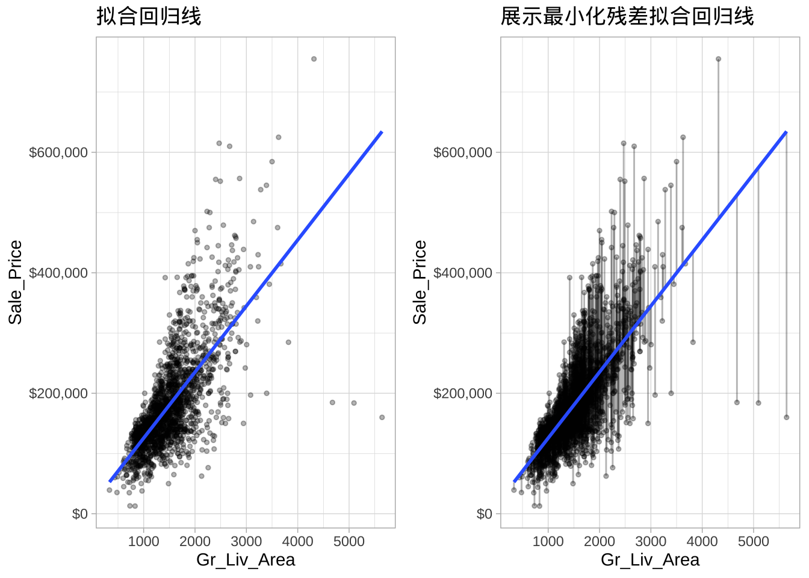
使用 coef() 函数可以提取模型的估计系数，使用 summary() 可以获取模型结果的详细报告：
summary(model1)
##
## Call:
## lm(formula = Sale_Price ~ Gr_Liv_Area, data = ames_train)
##
## Residuals:
## Min 1Q Median 3Q Max
## -474682 -30794 -1678 23353 328183
##
## Coefficients:
## Estimate Std. Error t value Pr(>|t|)
## (Intercept) 15938.173 3851.853 4.138 3.65e-05 ***
## Gr_Liv_Area 109.667 2.421 45.303 < 2e-16 ***
## ---
## Signif. codes: 0 '***' 0.001 '**' 0.01 '*' 0.05 '.' 0.1 ' ' 1
##
## Residual standard error: 56790 on 2047 degrees of freedom
## Multiple R-squared: 0.5007, Adjusted R-squared: 0.5004
## F-statistic: 2052 on 1 and 2047 DF, p-value: < 2.2e-16模型估计系数为 \(\hat{\beta}_0 = 15938.17\) 和 \(\hat{\beta}_1 = 109.67\)。解释为：地上居住面积每增加一平方英尺，平均售价增加109.66美元。
另一重要的估计量是误差方差 \(\sigma^2\)，通常假设其服从正态分布，由最大似然估计获得。
\[ \hat{\sigma}^2 = \frac{1}{n-p} \sum_{i=1}^n r_i^2, \]
其中 \(r_i = (Y_i - \hat{Y}_i)\) 称为第 i 个残差（即第 i 个观测响应值与预测响应值之间的差）。 \(\hat{\sigma}^2\) 也称为均方误差（MSE），其平方根称为RMSE。可以使用 sigma() 函数提取线性模型的RMSE。通常，这些误差指标在单独的验证集上或通过交叉验证来计算；但也可以在训练模型的训练数据上计算。
sigma(model1) # RMSE
## [1] 56787.94
sigma(model1)^2 # MSE
## [1] 3224869786推断
\(\beta_0\) 和 \(\beta_1\) 参数估计的变异性通过其标准误差（SE）来衡量。在 summary() 输出的Std. Error列中显示。同时还有报告 (t) 统计量和p值。还可以使用 confint() 函数获取每个回归系数置信区间。
confint(model1, level = 0.95)
## 2.5 % 97.5 %
## (Intercept) 8384.213 23492.1336
## Gr_Liv_Area 104.920 114.4149解释是有95%信心，地上居住面积每增加一平方英尺，平均售价在104.92美元至114.41美元之间增加。
1.3 多元线性回归
现实中通常有多个预测变量，可以将简单线性回归模型扩展为包括多个预测变量的多元线性回归（MLR）模型。对于两个预测变量，MLR模型为：
\[ Y = \beta_0 + \beta_1 X_1 + \beta_2 X_2 + \epsilon, \]
其中 \(X_1\) 和 \(X_2\) 是感兴趣的特征。
(model2 <- lm(Sale_Price ~ Gr_Liv_Area + Year_Built, data = ames_train))
##
## Call:
## lm(formula = Sale_Price ~ Gr_Liv_Area + Year_Built, data = ames_train)
##
## Coefficients:
## (Intercept) Gr_Liv_Area Year_Built
## -2.103e+06 9.383e+01 1.087e+03或者，可以使用 update() 函数更新 model1 中使用的模型公式。新公式可以使用 . 作为简写，表示保留公式左侧或右侧的所有内容，并使用 + 或 - 分别添加或移除原始模型中的项。
(model2 <- update(model1, . ~ . + Year_Built))
##
## Call:
## lm(formula = Sale_Price ~ Gr_Liv_Area + Year_Built, data = ames_train)
##
## Coefficients:
## (Intercept) Gr_Liv_Area Year_Built
## -2.103e+06 9.383e+01 1.087e+03回归系数的LS估计为 \(\hat{\beta}_1 = 93.8\) 和 \(\hat{\beta}_2 = 1087\)。解释为在保持房屋建造年份不变的情况下，地上居住面积每增加一平方英尺，平均售价增加93.8美元。同样，在保持地上居住面积不变的情况下，房屋建造年份每晚一年，平均售价增加约1087美元。
在线性回归中，交互效应可以通过特征的乘积（即 \(X_1 \times X_2\)）来获取。
lm(Sale_Price ~ Gr_Liv_Area + Year_Built + Gr_Liv_Area:Year_Built, data = ames_train)
##
## Call:
## lm(formula = Sale_Price ~ Gr_Liv_Area + Year_Built + Gr_Liv_Area:Year_Built,
## data = ames_train)
##
## Coefficients:
## (Intercept) Gr_Liv_Area Year_Built
## -8.105e+05 -7.285e+02 4.309e+02
## Gr_Liv_Area:Year_Built
## 4.168e-01多元线性模型可以包含任意多的预测变量，只要数据的行数多于参数数量即可。具有 (p) 个不同预测变量的通用多元线性回归模型为：
\[ Y = \beta_0 + \beta_1 X_1 + \beta_2 X_2 + \dots + \beta_p X_p + \epsilon, \]
其中 \(X_i\)（对于 \(i = 1, 2, \dots, p\)）是预测变量。
# 包含所有可能的主效应
model3 <- lm(Sale_Price ~ ., data = ames_train)
# 以整洁的数据框形式打印估计系数
broom::tidy(model3)
## # A tibble: 300 × 5
## term estimate std.error statistic p.value
## <chr> <dbl> <dbl> <dbl> <dbl>
## 1 (Intercept) -2.73e7 11016450. -2.47 0.0134
## 2 MS_SubClassOne_Story_1945_and_Older 3.90e3 3575. 1.09 0.275
## 3 MS_SubClassOne_Story_with_Finished_Atti… -5.39e3 12164. -0.443 0.658
## 4 MS_SubClassOne_and_Half_Story_Unfinishe… -4.41e2 13942. -0.0316 0.975
## 5 MS_SubClassOne_and_Half_Story_Finished_… 1.04e3 7250. 0.143 0.886
## 6 MS_SubClassTwo_Story_1946_and_Newer -6.67e3 5510. -1.21 0.226
## 7 MS_SubClassTwo_Story_1945_and_Older 1.57e3 6074. 0.259 0.795
## 8 MS_SubClassTwo_and_Half_Story_All_Ages 3.41e3 10149. 0.336 0.737
## 9 MS_SubClassSplit_or_Multilevel -6.67e3 11673. -0.571 0.568
## 10 MS_SubClassSplit_Foyer 1.49e3 7512. 0.199 0.843
## # ℹ 290 more rows1.4 评估模型准确性
上面已经为Ames住房数据拟合了三个主效应模型：单一预测变量、两个预测变量和所有可能预测变量。哪个模型是最佳的？可以使用前面介绍的RMSE指标和交叉验证来确定最佳模型。
# 使用10折交叉验证训练模型
set.seed(123) # 为了可重现性
(cv_model1 <- train(
form = Sale_Price ~ Gr_Liv_Area,
data = ames_train,
method = "lm",
trControl = trainControl(method = "cv", number = 10)
))
## Linear Regression
##
## 2049 samples
## 1 predictor
##
## No pre-processing
## Resampling: Cross-Validated (10 fold)
## Summary of sample sizes: 1843, 1844, 1844, 1844, 1844, 1844, ...
## Resampling results:
##
## RMSE Rsquared MAE
## 56644.76 0.510273 38851.99
##
## Tuning parameter 'intercept' was held constant at a value of TRUE交叉验证的RMSE为56644.76美元（这是10个交叉验证折的平均RMSE）。当应用于未见过的数据时，该模型的预测平均与实际售价相差约56644.76美元。
# 模型2交叉验证
set.seed(123)
cv_model2 <- train(
Sale_Price ~ Gr_Liv_Area + Year_Built,
data = ames_train,
method = "lm",
trControl = trainControl(method = "cv", number = 10)
)
# 模型3交叉验证
set.seed(123)
cv_model3 <- train(
Sale_Price ~ .,
data = ames_train,
method = "lm",
trControl = trainControl(method = "cv", number = 10)
)
# 提取样本外性能指标
summary(resamples(list(
model1 = cv_model1,
model2 = cv_model2,
model3 = cv_model3
)))
##
## Call:
## summary.resamples(object = resamples(list(model1 = cv_model1, model2
## = cv_model2, model3 = cv_model3)))
##
## Models: model1, model2, model3
## Number of resamples: 10
##
## MAE
## Min. 1st Qu. Median Mean 3rd Qu. Max. NA's
## model1 34076.73 37656.23 39785.18 38851.99 40200.92 42058.68 0
## model2 29227.14 30885.17 32003.59 31695.48 32710.41 33942.26 0
## model3 14740.86 15377.88 17564.13 17559.41 19344.23 21180.02 0
##
## RMSE
## Min. 1st Qu. Median Mean 3rd Qu. Max. NA's
## model1 45604.65 55896.58 57000.74 56644.76 59544.08 66198.59 0
## model2 37174.26 42650.00 46869.84 46865.68 51155.14 55780.47 0
## model3 20737.09 24858.60 40515.19 41691.74 55969.21 69879.47 0
##
## Rsquared
## Min. 1st Qu. Median Mean 3rd Qu. Max. NA's
## model1 0.4230788 0.4621034 0.5090642 0.5102730 0.5681246 0.5996400 0
## model2 0.5829425 0.6075293 0.6865871 0.6631008 0.6976664 0.7254572 0
## model3 0.5241423 0.6343368 0.7483874 0.7578796 0.9137443 0.9328876 0完整模型的交叉验证RMSE小于两个预测变量的模型和单预测变量模型。因此，包含所有可能主效应的模型表现最佳。
1.5 模型注意事项
如前所述，线性回归因其系数易于解释而成为一种流行的建模工具。然而，线性回归依赖于几个强假设，当我们在模型中包含更多预测变量时，这些假设常常被违反。违反这些假设可能导致对系数的错误解释和预测结果的偏差。
- 线性关系：线性回归假设预测变量与响应变量之间存在线性关系。然而，非线性关系可以通过对响应变量和/或预测变量进行变换使其变为线性（或近似线性）。例如，左图显示了售价与房屋建造年份之间存在的非线性关系。然而，通过对售价进行对数变换，可以实现近似线性的关系，尽管对于较老的房屋仍存在一些非线性。
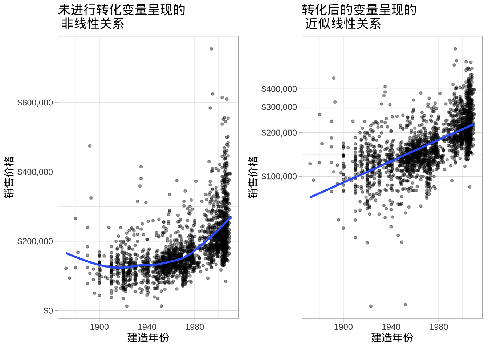
- 残差方差恒定：线性回归假设误差项（\(\epsilon_1, \epsilon_2, \dots, \epsilon_p\)）的方差是恒定的（此假设称为同方差性）。如果误差方差不恒定，系数的p值和置信区间将失效。与线性关系假设类似，非恒定方差通常可以通过变量变换或添加额外的预测变量来解决。例如，下图显示了
model1和model3的残差与预测值的关系。model1显示出典型的异方差问题，表现为锥形模式。然而，model3的残差方差似乎接近相等。
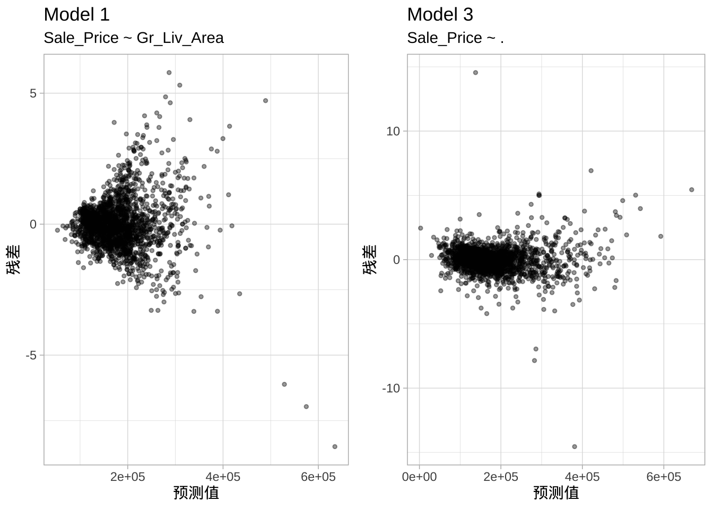
- 无自相关：线性回归假设误差是独立且不相关的。如果误差之间实际上存在相关性，那么系数的估计标准误差将出现偏差，导致预测区间的宽度比实际应有的更窄。左图显示了
model1的残差（y轴）与观测ID（x轴）的关系。存在一个明显的模式，表明\(\epsilon_1\)的信息提供了关于\(\epsilon_2\)的信息。
这种模式是由于数据按社区排序，而我们在该模型中未考虑社区因素。因此，同一社区内房屋的残差是相关的（同一社区的房屋通常大小相似，且特征往往类似）。由于model3（右图）包含了社区预测变量，误差中的相关性得到了减少。
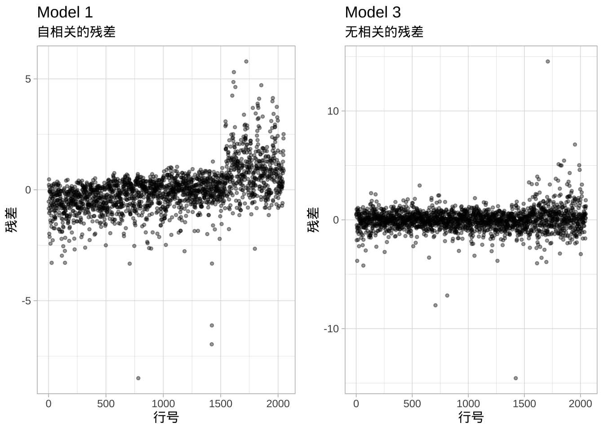
观测数多于预测变量：但当特征数量超过观测数量（\(p > n\)）时，无法获得OLS估计。解决此问题的一种方法是逐一移除变量，直到\(p < n\)。但是比较繁琐，后面介绍正则化回归，作为OLS的替代方法，可用于\(p > n\)的情况。
没有或较低的多重共线性：共线性是指两个或多个预测变量彼此密切相关的情况。共线性的存在会对OLS造成问题，因为很难区分共线性变量对响应的个别影响。事实上，共线性可能导致预测变量在实际上显著时被认为在统计上不显著。这显然会导致对系数的错误解释，并使识别重要预测变量变得困难。
在Ames数据中，例如，Garage_Area和Garage_Cars这两个变量的相关性较强，且两者都与响应变量（Sale_Price）强相关。在包含这两个变量的完整模型中，我们看到Garage_Cars在统计上不显著，而Garage_Area显著：
# 包含两个高度相关变量的拟合
summary(cv_model3) %>%
broom::tidy() %>%
filter(term %in% c("Garage_Area", "Garage_Cars"))
## # A tibble: 2 × 5
## term estimate std.error statistic p.value
## <chr> <dbl> <dbl> <dbl> <dbl>
## 1 Garage_Cars 3151. 1733. 1.82 0.0693
## 2 Garage_Area 11.9 5.69 2.10 0.0359然而，移除Garage_Area后重新拟合完整模型，Garage_Cars的系数估计值将近增加了一倍，并变得在统计上显著：
# 不包含Garage_Area的模型
set.seed(123)
mod_wo_Garage_Area <- train(
Sale_Price ~ .,
data = select(ames_train, -Garage_Area),
method = "lm",
trControl = trainControl(method = "cv", number = 10)
)
summary(mod_wo_Garage_Area) %>%
broom::tidy() %>%
filter(term == "Garage_Cars")
## # A tibble: 1 × 5
## term estimate std.error statistic p.value
## <chr> <dbl> <dbl> <dbl> <dbl>
## 1 Garage_Cars 5765. 1207. 4.78 0.00000194这反映了预测变量之间的关系导致的线性回归模型的不稳定性；这种不稳定性也会直接传递到模型预测中。一种选择是手动移除有问题的预测变量（逐一移除），直到所有变量的成对相关性低于某个预定阈值。然而，当预测变量数量较多时，会很繁琐。此外，当一个特征与两个或更多特征线性相关时，多重共线性可能会出现。在这些情况下，手动移除特定预测变量可能不可行，需要采用主成分回归和偏相关的降维方法。
1.6 主成分回归
主成分分析（PCA）可用于将相关变量表示为较少数量的不相关特征（称为主成分），并将这些主成分用作线性回归模型中的预测变量。这种两步过程称为主成分回归（PCR）。
在train()中指定method = "pcr"，即可在拟合回归模型之前对所有数值预测变量执行PCA。通常仅使用主成分中的一小部分作为预测变量，就可以显著提高性能。因此，可以将提取主成分的数量视为调参参数。以下代码执行了使用1到200个主成分的交叉验证PCR。可以看到，只提取五个主成分进入回归方程就可以显著降低预测误差，之后逐渐减少。
# 对PCR模型执行10折交叉验证，调参主成分数量，从1到100
set.seed(123)
cv_model_pcr <- train(
Sale_Price ~ .,
data = ames_train,
method = "pcr",
trControl = trainControl(method = "cv", number = 10),
preProcess = c("zv", "center", "scale"),
tuneLength = 200
)
# RMSE最低的模型
cv_model_pcr$bestTune
## ncomp
## 195 195# RMSE最低的模型结果
cv_model_pcr$results %>%
dplyr::filter(ncomp == pull(cv_model_pcr$bestTune))
## ncomp RMSE Rsquared MAE RMSESD RsquaredSD MAESD
## 1 195 31807.17 0.8435625 19228.7 7980.335 0.07041646 1592.957# 绘制交叉验证的RMSE
ggplot(cv_model_pcr)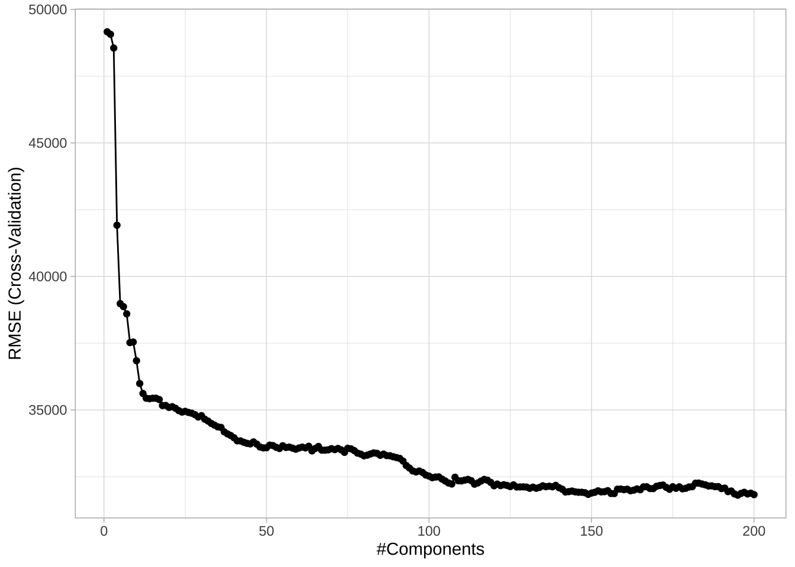
通过使用PCR控制多重共线性，模型预测准确性相比之前获得的线性模型有了显著提升（交叉验证RMSE从约41691.74美元减少到31807.17美元），甚至低于之前的k近邻模型（33582.40）。
值得注意的是，由于PCA在选择主成分时不考虑响应变量。因此，生成的新预测变量（主成分）是以减少预测变量空间的变异性为原则，并非最大化与响应变量间的关系。如果PCA处理的这种变异性恰好与响应变量的变异性相关，那么PCR会更容易识别出预测关系。但是，如果预测变量空间的变异性与响应变量的变异性无关，那么PCR可能难以识别实际存在的预测关系，甚至会导致预测准确性下降。
1.7 偏最小二乘
偏最小二乘（PLS）可以视为一种有监督的降维过程。与PCR类似，PLS也为回归模型构建输入的线性组合，但与PCR不同的是，它利用了响应变量来辅助构建主成分，所以不仅能捕捉原始特征中大部分信息，而且能生成与响应变量相关的新特征。
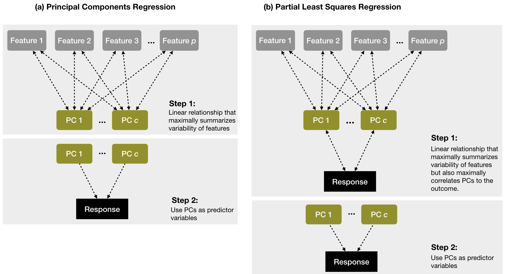
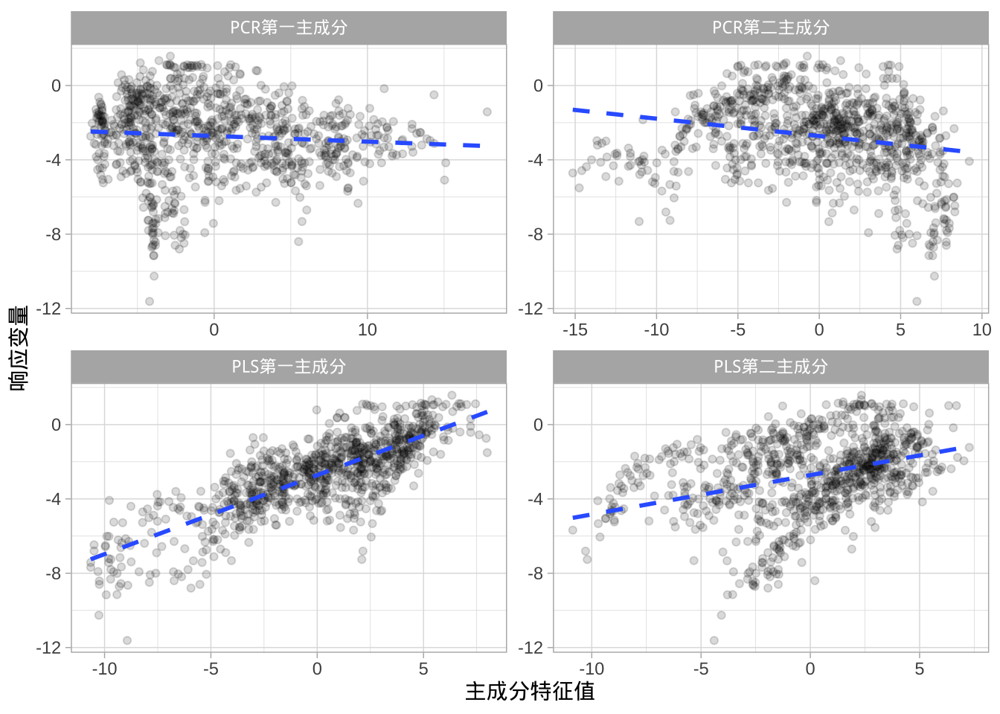
上图显示使用PCR时前两个主成分与响应变量关系很小，而使用PLS时前两个主成分与响应的关联性强得多。
PLS是通过\(y\)对相应\(x_j\)的简单线性回归模型的系数（回归系数与相关系数成正比）来计算第一个主成分（\(z_1\)），所以PLS对与响应变量相关性最强的变量赋予最高权重。接下来，计算第二个主成分（\(z_2\)）时，先将每个变量回归到\(z_1\)上，用每个回归的残差（每个预测变量未被第一个主成分解释的剩余信息）来代替每个预测变量值，同样依据将残差与响应变量的相关性赋予权重计算第二个主成分。以此类推直到计算出所有\(m\)个主成分。更详细的内容在主成分分析降维部分介绍。
与PCR类似，在train()中更改method参数可以拟合PLS模型。与PCR一样，使用的主成分数量是一个调参参数，由最大化预测准确性的模型确定。
下面使用1到30个主成分的交叉验证PLS。可以看出，与PCR相比，预测误差略有下降，但是使用更少的主成分就达到了最小RMSE，因为这些主成分受响应变量的引导。
# 对PLS模型执行10折交叉验证，调参主成分数量，从1到30
set.seed(123)
cv_model_pls <- train(
Sale_Price ~ .,
data = ames_train,
method = "pls",
trControl = trainControl(method = "cv", number = 10),
preProcess = c("zv", "center", "scale"),
tuneLength = 30
)
# RMSE最低的模型
cv_model_pls$bestTune
## ncomp
## 3 3# RMSE最低的模型结果
cv_model_pls$results %>%
dplyr::filter(ncomp == pull(cv_model_pls$bestTune))
## ncomp RMSE Rsquared MAE RMSESD RsquaredSD MAESD
## 1 3 31077.42 0.8493617 19137.51 7878.004 0.07079317 1784.467
# 绘制交叉验证的RMSE
ggplot(cv_model_pls)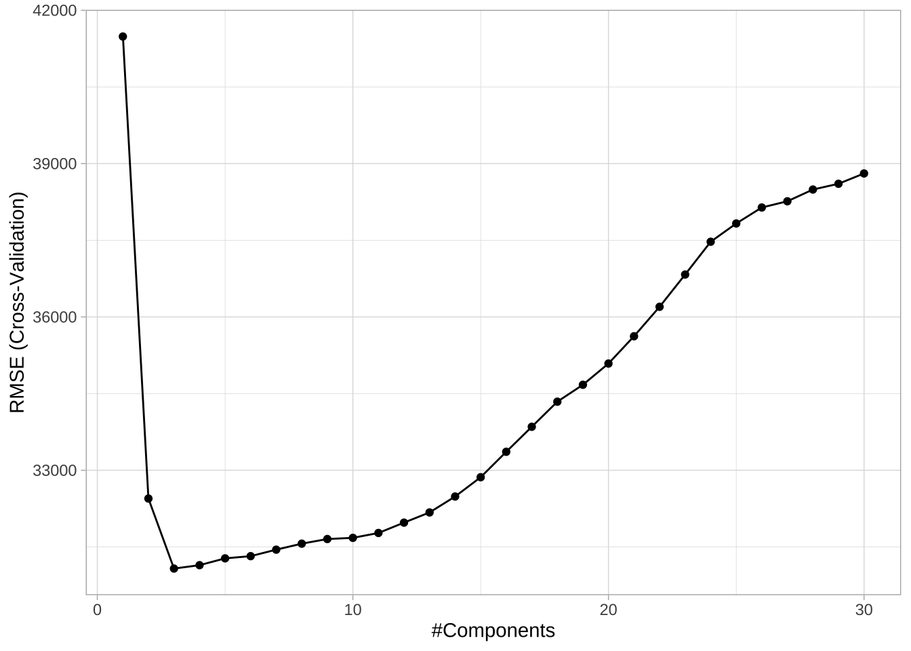
1.8 特征解释
一旦找到最大化预测准确性的模型，下一个目标是解释模型结构。解释模型结构需要先确定最具影响力的变量，可以使用vip::vip()提取并绘制最重要的变量。重要性度量从100（最重要）归一化到0（最不重要）。下图展示了最重要的四个变量分别是Gr_Liv_Area、First_Flr_SF、Garage_Cars和Garage_Area。
vip(cv_model_pls, num_features = 20, method = "model")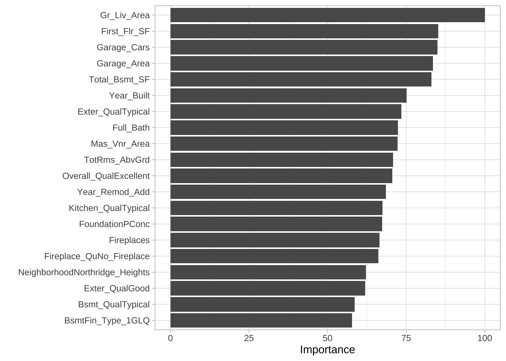
同时，由于线性回归模型假设单调线性关系。可以针对最重要的变量构建部分依赖图（PDPs）。PDPs绘制了指定特征在其边际分布上变化时平均预测值（\(\hat{y}\)）的变化。当存在非线性关系时，PDPs变得更加有用。pdp包提供了方便的函数来计算和绘制PDPs。
p1 <- pdp::partial(cv_model_pls, pred.var = "Gr_Liv_Area", grid.resolution = 20) %>%
autoplot() +
scale_y_continuous(limits = c(0, 300000), labels = scales::dollar)
p2 <- pdp::partial(cv_model_pls, pred.var = "First_Flr_SF", grid.resolution = 20) %>%
autoplot() +
scale_y_continuous(limits = c(0, 300000), labels = scales::dollar)
p3 <- pdp::partial(cv_model_pls, pred.var = "Garage_Cars", grid.resolution = 20) %>%
autoplot() +
scale_y_continuous(limits = c(0, 300000), labels = scales::dollar)
p4 <- pdp::partial(cv_model_pls, pred.var = "Garage_Area", grid.resolution = 4) %>%
autoplot() +
scale_y_continuous(limits = c(0, 300000), labels = scales::dollar)
gridExtra::grid.arrange(p1, p2, p3, p4, nrow = 2)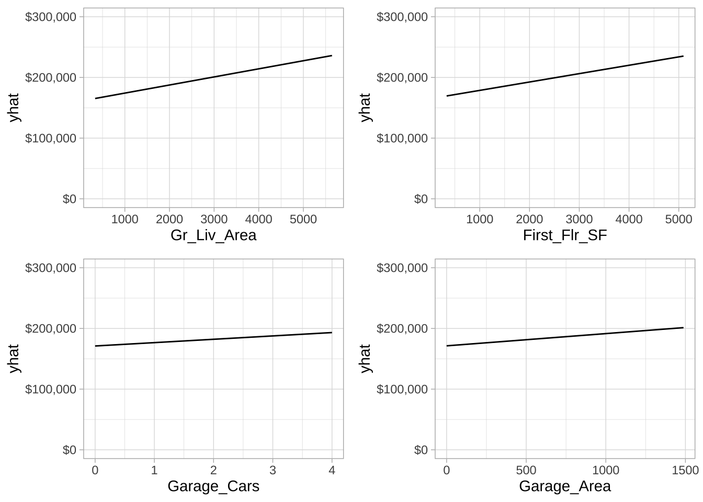
最重要的四个预测变量均与售价呈正相关；然而，我们看到最重要预测变量的斜率（\(\hat{\beta}_i\)）最陡，对于较不重要的变量逐渐减小。
2 逻辑回归
当响应变量是二元变量（即是/否）时，线性回归并不适用，需要采用逻辑回归。
2.1 工具和数据
# 辅助包
library(dplyr) # 用于数据处理
library(ggplot2) # 用于出色的绘图
library(rsample) # 用于数据拆分
# 建模包
library(caret) # 用于逻辑回归建模
# 模型解释包
library(vip) # 变量重要性使用员工流失数据，目标是预测员工是否流失的响应变量（编码为“是”/“否”）。
library(modeldata)
df <- attrition %>% mutate_if(is.ordered, factor, ordered = FALSE)
# 为rsample::attrition数据创建训练集（70%）和测试集（30%）。
set.seed(123) # 为了可重现性
churn_split <- initial_split(df, prop = .7, strata = "Attrition")
churn_train <- training(churn_split)
churn_test <- testing(churn_split)2.2 逻辑回归的目的
假设有关于某地区居民参与公共福利项目的数据，想了解居民的年收入能否解释他们是否参与该项目。如果使用线性回归，对于接近零的年收入，预测出负的参与概率；如果年收入非常高，又会得到大于1的概率值。这些预测没有意义，因为无论年收入如何，真实的参与概率必须在0到1之间。而逻辑回归线是非线性的S形曲线，相当于将取值范围从负无穷到正无穷转化为0到1之间。
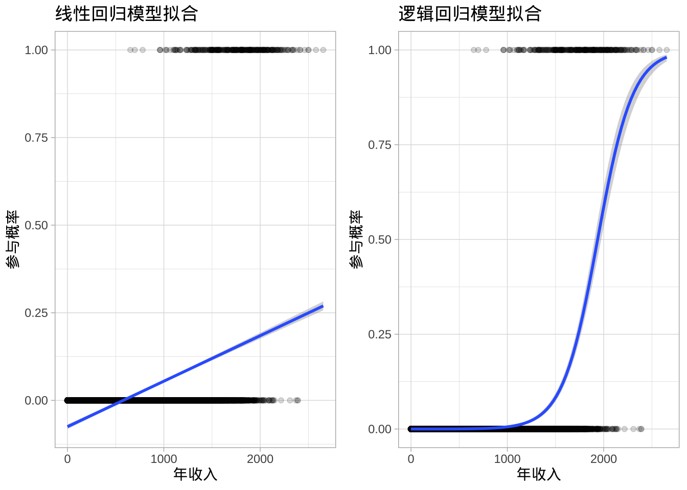
为了避免线性模型在二元响应上的不足，使用一个函数来建模响应概率，该函数对所有\(X\)值输出在0到1之间。许多函数满足这一描述。在逻辑回归中，使用逻辑函数。
\[ p(X) = \frac{e^{\beta_0 + \beta_1 X}}{1 + e^{\beta_0 + \beta_1 X}} \tag{5.1} \]
其中，\(\beta_i\)参数表示与线性回归类似的系数，\(p(X)\)可以解释为正类（上述例子中的参与项目）出现的概率。\(p(x)\)的最小值在\(\lim_{a \to -\infty} \left[ \frac{e^a}{1 + e^a} \right] = 0\)时取得，最大值在\(\lim_{a \to \infty} \left[ \frac{e^a}{1 + e^a} \right] = 1\)时取得，这将输出概率限制在0到1之间。对方程进行重新整理，得到logit变换（逻辑回归因此得名）：
\[ g(X) = \ln \left[ \frac{p(X)}{1 - p(X)} \right] = \beta_0 + \beta_1 X \tag{5.2} \]
对\(p(X)\)应用logit变换会得到一个类似于简单线性回归模型中均值响应的线性方程。使用logit变换还可以为\(\beta_1\)的大小提供直观的解释：对于\(X\)的每一单位增加，发生概率（例如参与项目）以\(e^{\beta_1}\)的倍数递增。如果\(X\)是分类变量，存在类似的解释。
2.3 简单逻辑回归
拟合两个逻辑回归模型，以预测员工流失的概率。第一个模型基于员工的月收入（MonthlyIncome）预测流失概率，第二个模型基于员工是否加班（OverTime）。glm()函数拟合广义线性模型，语法类似于lm()，但是必须传递参数family = "binomial"，以告诉R运行逻辑回归。
model1 <- glm(Attrition ~ MonthlyIncome, family = "binomial", data = churn_train)
model2 <- glm(Attrition ~ OverTime, family = "binomial", data = churn_train)在后台，glm()使用最大似然估计（ML）来估计未知模型参数。使用ML估计拟合逻辑回归模型的基本逻辑是寻找\(\beta_0\)和\(\beta_1\)的估计值，使得每个员工的预测流失概率\(\hat{p}(X_i)\)都尽可能接近员工的实际流失状态。似然函数的数学方程形式化：
\[ \ell(\beta_0, \beta_1) = \prod_{i: y_i=1} p(X_i) \prod_{i': y'_i=0} [1 - p(x'_i)] \]
估计值\(\hat{\beta}_0\)和\(\hat{\beta}_1\)被选择以最大化这个似然函数。结果是流失的预测概率。
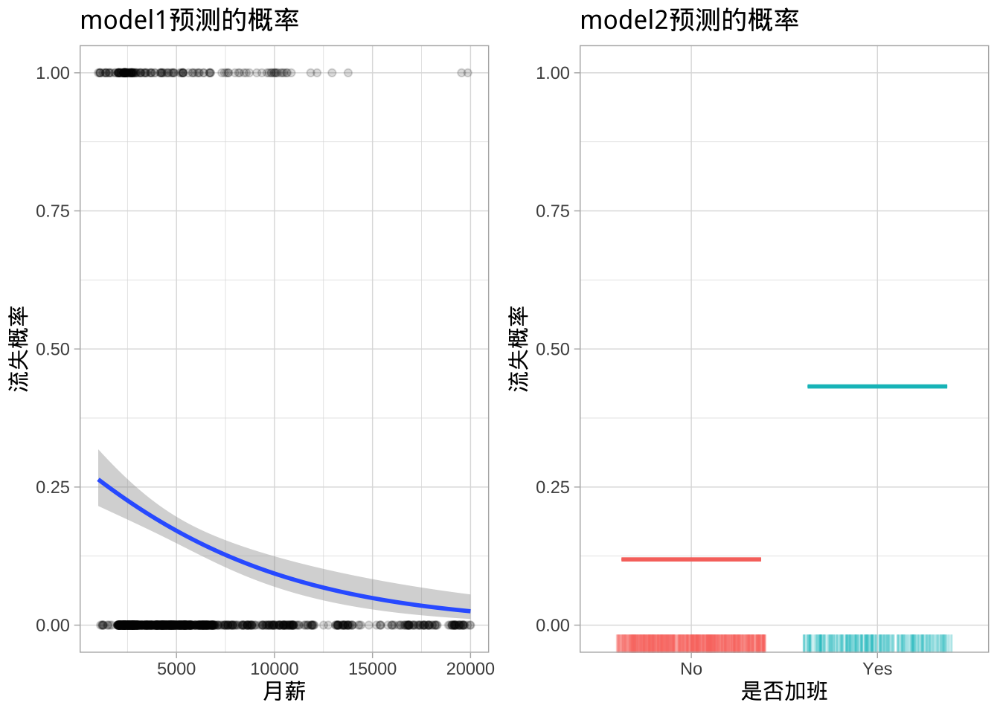
对于model1，月收入的估计系数为\(\hat{\beta}_1 = -0.000130\)，为负值，表明月收入增加与流失概率降低相关。类似地，对于model2，加班的员工与不加班的员工相比，流失概率增加。
tidy(model1)
## # A tibble: 2 × 5
## term estimate std.error statistic p.value
## <chr> <dbl> <dbl> <dbl> <dbl>
## 1 (Intercept) -0.886 0.157 -5.64 0.0000000174
## 2 MonthlyIncome -0.000139 0.0000272 -5.10 0.000000344
tidy(model2)
## # A tibble: 2 × 5
## term estimate std.error statistic p.value
## <chr> <dbl> <dbl> <dbl> <dbl>
## 1 (Intercept) -2.13 0.119 -17.9 1.46e-71
## 2 OverTimeYes 1.29 0.176 7.35 2.01e-13如前所述，使用exp()变换更容易解释系数：
exp(coef(model1))
## (Intercept) MonthlyIncome
## 0.4122647 0.9998614
exp(coef(model2))
## (Intercept) OverTimeYes
## 0.1189759 3.6323389因此，在model1中，月收入每增加一美元，员工流失的概率以0.99986的倍数递增；而在model2中，加班的员工与不加班的员工相比，流失概率增加3.6倍。
与线性回归类似，可以使用估计的标准误差来获得置信区间：
confint(model1) # 对于概率，可以使用 `exp(confint(model1))`
## 2.5 % 97.5 %
## (Intercept) -1.1932606571 -5.761048e-01
## MonthlyIncome -0.0001948723 -8.803311e-05
confint(model2)
## 2.5 % 97.5 %
## (Intercept) -2.3695727 -1.902409
## OverTimeYes 0.9463761 1.6353732.4 多元逻辑回归
使用多个预测变量预测二元响应：
\[ p(X) = \frac{e^{\beta_0 + \beta_1 X + \dots + \beta_p X_p}}{1 + e^{\beta_0 + \beta_1 X + \dots + \beta_p X_p}} \]
将月收入和是否加班两个变量共同加入模型。结果显示，两个特征在0.05水平上均具有统计显著性。
model3 <- glm(
Attrition ~ MonthlyIncome + OverTime,
family = "binomial",
data = churn_train
)
tidy(model3)
## # A tibble: 3 × 5
## term estimate std.error statistic p.value
## <chr> <dbl> <dbl> <dbl> <dbl>
## 1 (Intercept) -1.33 0.177 -7.54 4.74e-14
## 2 MonthlyIncome -0.000147 0.0000280 -5.27 1.38e- 7
## 3 OverTimeYes 1.35 0.180 7.50 6.59e-14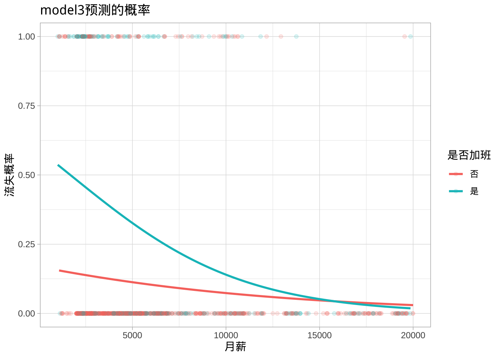
2.5 评估模型准确性
现在关注模型的预测效果，使用caret::train()拟合三个10折交叉验证的逻辑回归模型。提取准确性指标（在本例中为分类准确性），可以看到cv_model1和cv_model2的平均准确率均为83.95%。然而，使用所有预测变量的cv_model3达到了87.16%的平均准确率。
set.seed(123)
cv_model1 <- train(
Attrition ~ MonthlyIncome,
data = churn_train,
method = "glm",
family = "binomial",
trControl = trainControl(method = "cv", number = 10)
)
set.seed(123)
cv_model2 <- train(
Attrition ~ MonthlyIncome + OverTime,
data = churn_train,
method = "glm",
family = "binomial",
trControl = trainControl(method = "cv", number = 10)
)
set.seed(123)
cv_model3 <- train(
Attrition ~ .,
data = churn_train,
method = "glm",
family = "binomial",
trControl = trainControl(method = "cv", number = 10)
)
# 提取样本外性能指标
summary(
resamples(
list(
model1 = cv_model1,
model2 = cv_model2,
model3 = cv_model3
)
)
)$statistics$Accuracy
## Min. 1st Qu. Median Mean 3rd Qu. Max. NA's
## model1 0.8349515 0.8349515 0.8398379 0.8395076 0.8431373 0.8446602 0
## model2 0.8349515 0.8349515 0.8398379 0.8395076 0.8431373 0.8446602 0
## model3 0.8058252 0.8529412 0.8786765 0.8715662 0.8907767 0.9320388 0可以通过评估混淆矩阵进一步了解模型的性能，使用caret::confusionMatrix()计算混淆矩阵。可以看到，虽然在预测非流失情况方面表现良好（高特异性），但模型在预测实际流失情况方面的表现特别差（低敏感性）。
# 预测类别
pred_class <- predict(cv_model3, churn_train)
# 创建混淆矩阵
confusionMatrix(
data = relevel(pred_class, ref = "Yes"),
reference = relevel(churn_train$Attrition, ref = "Yes")
)
## Confusion Matrix and Statistics
##
## Reference
## Prediction Yes No
## Yes 83 20
## No 82 843
##
## Accuracy : 0.9008
## 95% CI : (0.8809, 0.9184)
## No Information Rate : 0.8395
## P-Value [Acc > NIR] : 8.982e-09
##
## Kappa : 0.5658
##
## Mcnemar's Test P-Value : 1.542e-09
##
## Sensitivity : 0.50303
## Specificity : 0.97683
## Pos Pred Value : 0.80583
## Neg Pred Value : 0.91135
## Prevalence : 0.16051
## Detection Rate : 0.08074
## Detection Prevalence : 0.10019
## Balanced Accuracy : 0.73993
##
## 'Positive' Class : Yes
## 在上面的混淆矩阵中，无信息率为0.839。这代表训练数据中非流失与流失的比例（table(churn_train$Attrition) %>% prop.table()）。这意味着如果简单地对每个员工都预测“否”（盲猜），仍然可以获得83.9%的准确率。可以通过绘制ROC曲线比较简单模型（cv_model1）与完整模型（cv_model3）之间的性能差别。
library(ROCR)
# 计算预测概率
m1_prob <- predict(cv_model1, churn_train, type = "prob")$Yes
m3_prob <- predict(cv_model3, churn_train, type = "prob")$Yes
# 计算cv_model1和cv_model3的AUC指标
perf1 <- prediction(m1_prob, churn_train$Attrition) %>%
performance(measure = "tpr", x.measure = "fpr")
perf2 <- prediction(m3_prob, churn_train$Attrition) %>%
performance(measure = "tpr", x.measure = "fpr")
# 绘制cv_model1和cv_model3的ROC曲线
plot(perf1, col = "black", lty = 2)
plot(perf2, add = TRUE, col = "blue")
legend(0.8, 0.2, legend = c("cv_model1", "cv_model3"),
col = c("black", "blue"), lty = 2:1, cex = 0.6)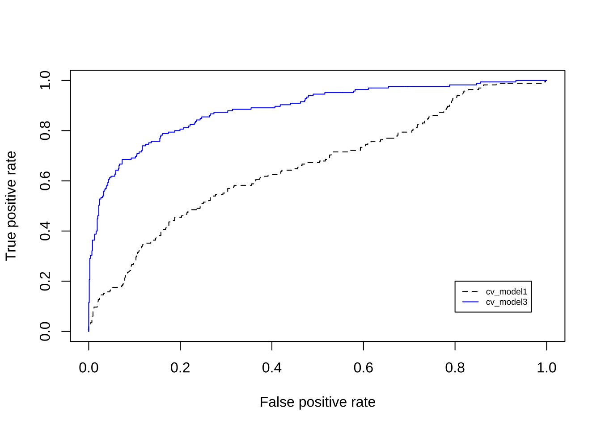
与线性回归类似，可以执行PLS逻辑回归，通过减少数值预测变量的维度来提高准确性。原数据集中有16个数值特征，最佳模型使用14个主成分，平均准确率为0.8716，与cv_model3的平均交叉验证准确率（0.8716）相等，并没有明显改善。
# 对PLS模型执行10折交叉验证，调整使用的主成分数量
set.seed(123)
cv_model_pls <- train(
Attrition ~ .,
data = churn_train,
method = "pls",
family = "binomial",
trControl = trainControl(method = "cv", number = 10),
preProcess = c("zv", "center", "scale"),
tuneLength = 16
)
# 具有最高准确率的模型
cv_model_pls$bestTune
## ncomp
## 11 11
# 最高准确率模型的结果
cv_model_pls$results %>%
dplyr::filter(ncomp == pull(cv_model_pls$bestTune))
## ncomp Accuracy Kappa AccuracySD KappaSD
## 1 11 0.8716041 0.3315369 0.02178929 0.1387885
# 绘制交叉验证的准确率
ggplot(cv_model_pls)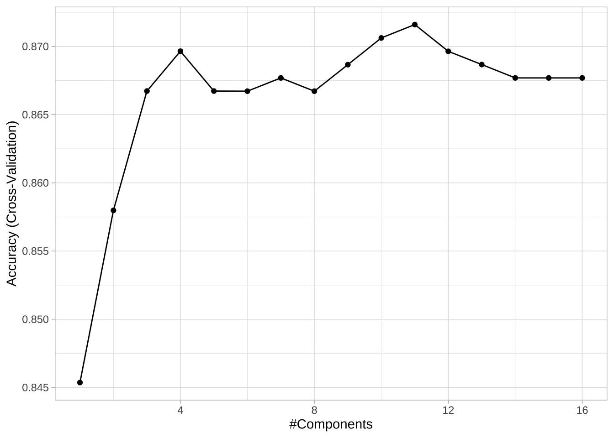
2.6 特征解释
与线性回归类似，一旦确定了逻辑回归模型，就需要解释特征如何影响结果。使用vip::vip()，可以提取前20个有影响的变量。下图显示，加班是最重要的变量，其次是环境满意度和工作满意度。
vip(cv_model3, num_features = 20)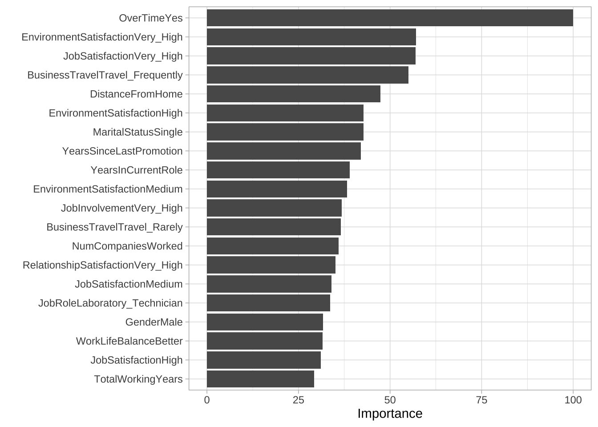
逻辑回归的线性关系发生在logit尺度上，在概率尺度上，关系是非线性的。可以展示了员工流失预测概率与重要的变量之间的关系（同时考虑模型中其他预测变量的平均效应），可以看到预测的流失概率如何随着影响预测变量的值变化。
p1 <- pdp::partial(cv_model3, pred.var = "OverTime",
prob = TRUE, # 预测概率
which.class = 2) %>% # 指定预测概率的类别 (2 = "Yes")，即是流失
autoplot() + ylim(c(0, 1))
p2 <- pdp::partial(cv_model3, pred.var = "EnvironmentSatisfaction",
prob = TRUE,
which.class = 2) %>%
autoplot() + ylim(c(0, 1))
p3 <- pdp::partial(cv_model3, pred.var = "JobSatisfaction",
prob = TRUE,
which.class = 2) %>%
autoplot() + ylim(c(0, 1))
p4 <- pdp::partial(cv_model3, pred.var = "DistanceFromHome",
prob = TRUE,
which.class = 2) %>%
autoplot() + ylim(c(0, 1))
gridExtra::grid.arrange(p1, p2, p3, p4, nrow = 2)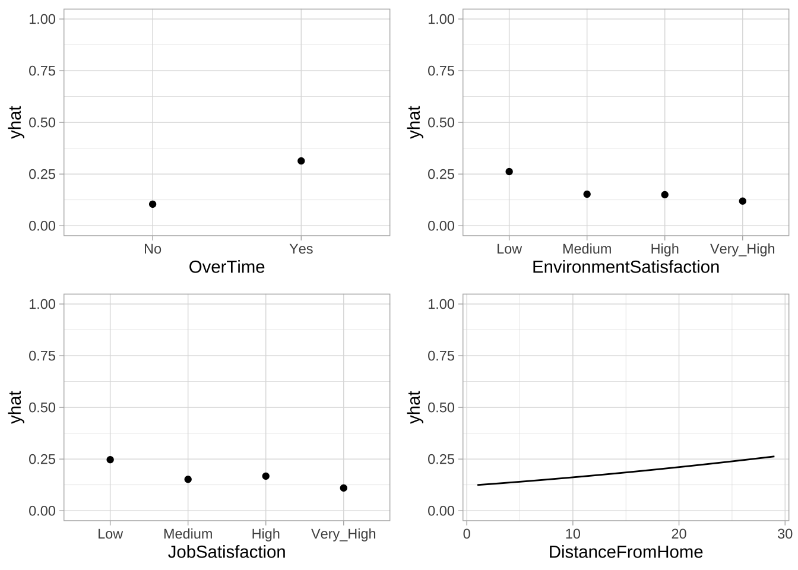
3 正则化回归
线性模型（LMs）提供了一种简单而有效的方法来进行预测建模。此外，当满足线性模型的某些假设（如方差恒定）时，估计的系数是无偏的，并且在所有线性无偏估计中具有最低的方差。然而，对于大数据集，通常包含大量特征，随着特征数量的增加，某些假设通常会失效，模型会过拟合训练数据，导致样本外误差增加。正则化方法提供了一种约束或正则化估计系数的方法，可以降低估计系数的方差并减少样本外误差。
3.1 工具和数据
# 辅助包
library(recipes) # 用于特征工程
# 建模包
library(glmnet) # 用于实现正则化回归
library(caret) # 用于自动化调参过程
# 模型解释包
library(vip) # 用于变量重要性数据采用之前创建的ames_train和ames_test数据集和员工流失数据。
3.2 正则化回归的目的
OLS回归的目标是找到超平面（在二维空间中是一条直线），能够使得响应变量的观测值与预测值之间的平方误差和（SSE）最小。最小化的目标函数如下：
\[ \text{minimize} \left( SSE = \sum_{i=1}^n (y_i - \hat{y}_i)^2 \right) \]
但是，OLS目标函数的表现取决于几个关键假设：
- 线性关系；
- 观测数（\(n\)）大于特征数（\(p\)）（\(n > p\)）；
- 没有或几乎没有多重共线性。
此外，还有误差的正态性和同方差假设。
现实中的数据集（如文本分析等）是宽数据，包含较多的特征（\(p > n\)）。随着\(p\)的增加，可能会违反OLS的关键假设，例如，观测数大于特征数，较大的多重共线性等。
多重共线性的存在会造成系数估计被放大，系数分配不稳定，放大噪声的影响。 在OLS回归中，系数估计的公式为： \[\hat{\beta} = (X^T X)^{-1} X^T y\] 其中，\(X\) 是特征矩阵，\(y\) 是响应变量。 当特征之间高度相关时，\(X^T X\) 矩阵变得接近奇异（singular），即其行列式接近于零。这意味着矩阵的逆 \((X^T X)^{-1}\) 中的元素会变得非常大。大的矩阵元素会导致系数估计 \(\hat{\beta}\) 的值被放大。
多重共线性使得模型难以区分高度相关的特征对响应变量的独立贡献。例如，年收入和教育水平都可能与参与福利项目的概率相关，但由于它们高度相关，模型可能“过度分配”贡献给其中一个特征，导致其系数变得异常大，而另一个特征的系数可能被压低或符号相反。
当特征高度相关时，模型对数据中的微小噪声或随机波动变得非常敏感。OLS试图通过调整系数来拟合数据中的所有变异（包括噪声），这可能导致某些系数被放大到不合理的程度，以“解释”这些噪声。
一类常规解决多重共线性的方法称为硬阈值特征选择，例如分步回归中的前向选择和后向消除策略。然而，这些方法计算效率低下，扩展性不佳，并且特征只有留在模型和移除模型两个选择（硬阈值）。相比之下，另一类方法称为软阈值，通过惩罚项逐渐将不相关特征的影响推向零，可以产生更准确且更容易解释的模型。
针对存在多重共线性的宽数据，一种替代OLS回归的方法是使用正则化回归（通常也称为惩罚模型或收缩方法）约束所有系数估计的总的大小。这种约束有助于减少系数的幅度和波动，并降低模型的方差（代价是系数估计不再无偏，但这是合理的折衷）。
正则化回归模型的目标函数类似于OLS，但增加了惩罚项\(P\)：
\[ \text{minimize} \left( SSE + P \right) \] 三种常见的惩罚参数：
- Ridge（岭回归）；
- Lasso（或LASSO）；
- Elastic net（弹性网），是ridge和lasso的组合。
Ridge惩罚
Ridge回归通过向目标函数添加\(\lambda \sum_{j=1}^p \beta_j^2\)来控制估计系数的大小：
\[ \text{minimize} \left( SSE + \lambda \sum_{j=1}^p \beta_j^2 \right) \]
该惩罚称为\(L^2\)（或欧几里得）范数，由调参参数\(\lambda\)控制。当\(\lambda = 0\)时，目标函数等同于OLS回归目标函数，仅最小化SSE。然而，当\(\lambda \to \infty\)时，惩罚变大，迫使系数趋向于零。
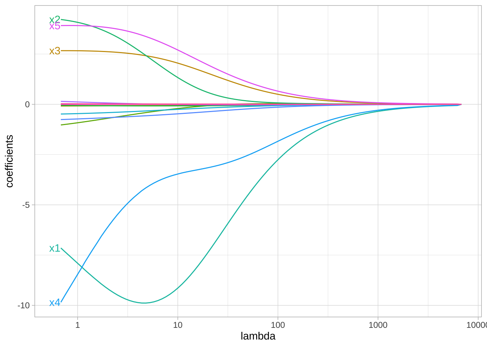
随着\(\lambda\)从\(0 \to \infty\)，15个预测变量的Ridge回归系数。随着\(\lambda\)变大，系数幅度受到更多约束。
尽管这些系数已进行缩放和中心化，但是当\(\lambda\)接近零时，一些系数相当大。当\(\lambda\)较小时（即正则化力度较弱时），x1的系数是一个大的负值，并且在\(\lambda\)变化时，系数的数值可能会不稳定（波动）。这种波动通常是由于特征之间的多重共线性导致的。当\(\lambda\)增加到大约7时，正则化开始显著约束系数，x1的系数开始稳定地趋向于零。这表明Ridge回归通过施加更大的惩罚（更高的\(\lambda\)值），限制了系数的大小，减少了由于多重共线性引起的系数波动。这种方差的减少通常会使模型更稳定，减少样本外的预测误差（尽管可能会引入一些偏差）。
Ridge回归不执行特征选择，会保留最终模型中的所有可用特征。因此，如果认为需要保留模型中的所有特征，只是减少不太重要的变量可能产生的噪声时（较小数据集存在严重多重共线性），Ridge模型是更好的选择。如果需要更高的解释性，并且许多特征是冗余的，那么Lasso或弹性网惩罚可能更可取。
Lasso惩罚
Lasso（最小绝对收缩和选择算子，least absolute shrinkage and selection operator）惩罚是Ridge惩罚的替代方法，仅需稍作修改。唯一的区别是将\(L^2\)范数替换为\(L^1\)范数：\(\lambda \sum_{j=1}^p |\beta_j|\)：
\[ \text{minimize} \left( SSE + \lambda \sum_{j=1}^p |\beta_j| \right) \tag{6.4} \]
与Ridge惩罚将变量推向接近但不等于零不同，Lasso惩罚实际上会将系数完全推向零。Lasso惩罚不仅改善了模型，还执行了自动特征选择。
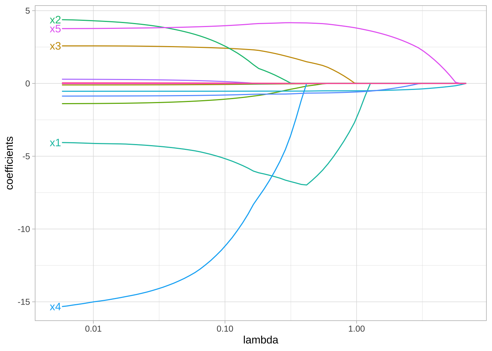
上图中，当\(\lambda < 0.01\)时，所有15个变量都包含在模型中；当\(\lambda \approx 0.5\)时，保留了9个变量；当\(\log(\lambda) = 1\)时，仅保留了5个变量。因此，当数据集具有许多特征时，Lasso可用于识别和提取信号最大（且最一致）的特征。
弹性网
弹性网是Ridge和Lasso惩罚的泛化，结合了两者的惩罚：
\[ \text{minimize} \left( SSE + \lambda_1 \sum_{j=1}^p \beta_j^2 + \lambda_2 \sum_{j=1}^p |\beta_j| \right) \tag{6.5} \]
Lasso在处理高度相关特征时的特征选择过程具有一定的随机性。也就是说，Lasso可能在不同的运行或数据样本中选择不同的特征来保留或排除，而这种选择并不基于明确的规则或优先级。例如，两个高度相关的特征可能在理论上对响应变量的贡献相似，但Lasso可能随机选择其中一个保留，另一个排除。这种非系统化的选择可能导致模型的不稳定性，尤其是在特征选择对解释性至关重要的场景中。相对地，Ridge回归使用\(L^2\)范数惩罚（\(\lambda \sum_{j=1}^p \beta_j^2\)），不会将系数完全推向零，而是将所有系数压缩到接近零但非零的值。对于高度相关的特征，Ridge回归倾向于将它们的系数压缩到相似的值，而不是随机选择一个保留、一个排除。弹性网结合了Ridge和Lasso的优点，通过在目标函数中同时加入\(L^1\)和\(L^2\)惩罚。\(L^2\)惩罚（来自Ridge）帮助系统化地处理高度相关的特征，降低系数方差，保持模型稳定性；而\(L^1\)惩罚（来自Lasso）则允许将不重要特征的系数推向零，实现特征选择。弹性网还可以通过调整参数alpha（公式未纳入）控制\(L^1\)和\(L^2\)惩罚的相对权重），在特征选择和处理多重共线性之间取得平衡。
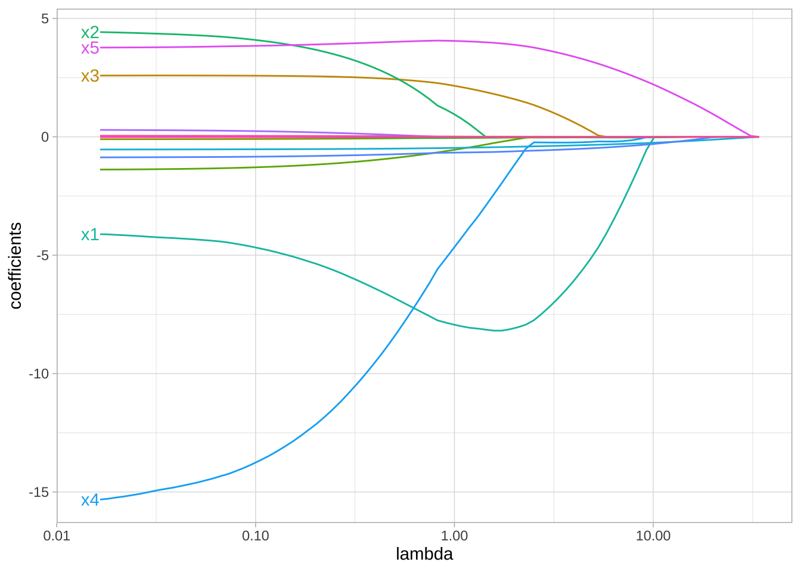
3.3 实现
可以使用glmnet直接引擎实现正则化回归，此外h2o、elasticnet、penalized包也可以实现。glmnet包非常高效且快速，特别适用于大数据集（底层是Fortran语言）。它仅接受非公式XY接口，因此在建模之前，需要将特征和目标集分开。
以下代码使用model.matrix对我们的特征集进行哑变量编码（对于大型数据集，可使用Matrix::sparse.model.matrix以提高效率）。我们还对响应变量进行了\(\log\)变换，这不是必需的；然而，像正则化回归这样的参数模型对偏态响应值敏感，因此变换通常可以提高预测性能。
# 创建训练特征矩阵
# 使用 model.matrix(...)[, -1] 丢弃截距后
# 获得原始回归模型所有特征（扩展因子和交互项）的数据矩阵
X <- model.matrix(Sale_Price ~ ., ames_train)[, -1]
# 对响应变量进行 log 变换
Y <- log(ames_train$Sale_Price)使用glmnet::glmnet()函数进行正则化回归，用alpha参数设定Ridge（alpha = 0）、Lasso（alpha = 1）或弹性网（0 < alpha < 1）模型；默认模型会进行系数归一化，否则，自然值较大的预测变量会受到更多惩罚。如果之前已经标准化了预测变量，可以通过standardize = FALSE关闭。
# 对 Ames 数据应用 Ridge 回归
ridge <- glmnet(
x = X,
y = Y,
alpha = 0
)
plot(ridge, xvar = "lambda")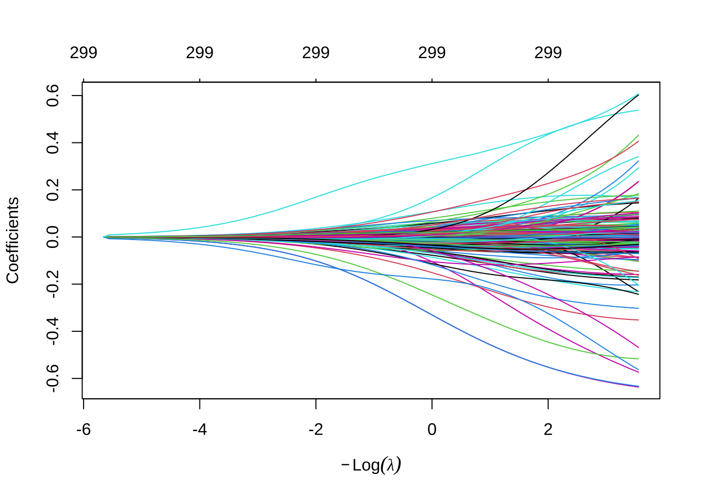
可以使用ridge$lambda查看精确\(\lambda\)值，glmnet会自己应用100个基于数据推导的\(\lambda\)值。可以使用coef()访问模型的系数。
# 查看惩罚参数的 lambda 值
ridge$lambda %>% head()
## [1] 285.7769 260.3893 237.2570 216.1798 196.9749 179.4762# 小 lambda 导致大系数
coef(ridge)[c("Latitude", "Overall_QualVery_Excellent"), 100]
## Latitude Overall_QualVery_Excellent
## 0.60703722 0.09344684# 大 lambda 导致小系数
coef(ridge)[c("Latitude", "Overall_QualVery_Excellent"), 1]
## Latitude Overall_QualVery_Excellent
## 6.115930e-36 9.233251e-373.4 调参
为了确定最佳的\(\lambda\)值，可以使用k折交叉验证（CV）。glmnet::cv.glmnet()可以执行k折交叉验证，默认情况下执行10折交叉验证。
# 对 Ames 数据应用 CV Ridge 回归
ridge <- cv.glmnet(
x = X,
y = Y,
alpha = 0
)
# 对 Ames 数据应用 CV Lasso 回归
lasso <- cv.glmnet(
x = X,
y = Y,
alpha = 1
)
# 绘制结果
par(mfrow = c(1, 2))
plot(ridge, main = "Ridge惩罚\n\n")
plot(lasso, main = "Lasso惩罚\n\n")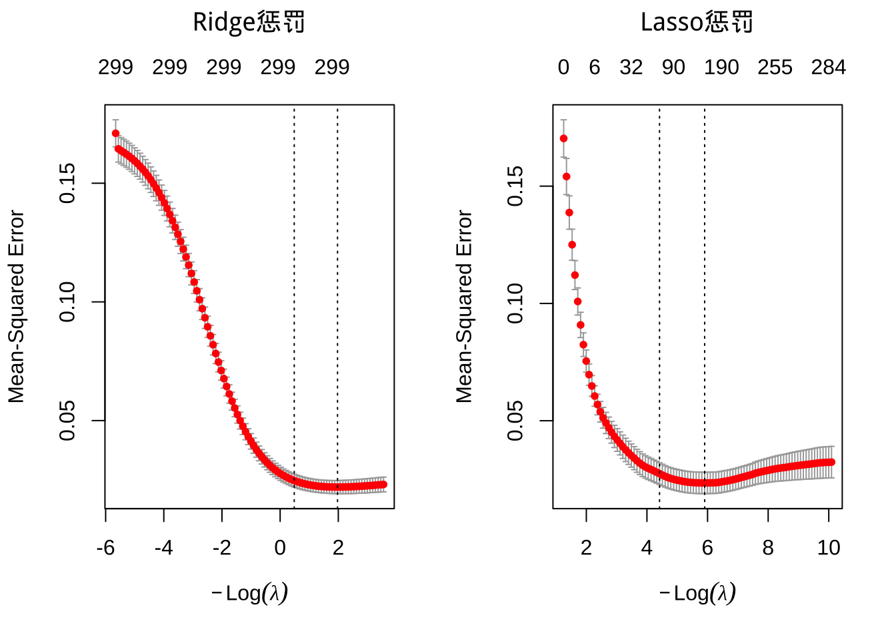
图中展示了Ridge和Lasso模型的10折交叉验证MSE随\(\lambda\)的变化。从右向左，即\(\lambda\)增大的方向，每个图中的第一条虚线表示具有最小MSE的\(\lambda\)，第二条表示最小MSE加上一个标准误差时的\(\lambda\)。在两个模型中，随着惩罚\(\log(\lambda)\)变大，MSE略有减少，说明OLS模型可能会过拟合。但继续增加惩罚，MSE开始增加。图顶部的数字表示模型中的特征数量。
接着获取参数的具体数值。
# Ridge 模型
min(ridge$cvm) # 最小 MSE
## [1] 0.02198554
# [1] 0.0218308
ridge$lambda.min # 最小 MSE 对应的 lambda
## [1] 0.1389619
## [1] 0.1389619
ridge$cvm[ridge$lambda == ridge$lambda.1se] # 1-SE 规则
## [1] 0.02471237
## [1] 0.0241608
ridge$lambda.1se # 此 MSE 对应的 lambda
## [1] 0.6156877
## [1] 0.5609917# Lasso 模型
min(lasso$cvm) # 最小 MSE
## [1] 0.02346905
## [1] 0.02360464
lasso$lambda.min # 最小 MSE 对应的 lambda
## [1] 0.002727879
## [1] 0.003606096
lasso$nzero[lasso$lambda == lasso$lambda.min] # 最小 MSE 时的系数数量
## s50
## 151
## s47
## 135
lasso$cvm[lasso$lambda == lasso$lambda.1se] # 1-SE 规则
## [1] 0.02745127
## [1] 0.02690078
lasso$lambda.1se # 此 MSE 对应的 lambda
## [1] 0.0120862
## [1] 0.01326459
lasso$nzero[lasso$lambda == lasso$lambda.1se] # 1-SE MSE 时的系数数量
## s34
## 72
## s33
## 69可以直观地评估这一点。通过绘制在\(\lambda\)两个取值范围内的估计系数，可以直观评估在最大化预测准确性（保持MSE最小）的同时，可以多大程度地约束系数。Ridge和Lasso惩罚提供了相似的最小MSE，但是Ridge使用所有294个特征，而Lasso模型减少了特征。因此，虽然Lasso模型没有显著优于Ridge模型，但提供了更好的描述和解释预测变量的方式。
# Ridge 模型
ridge_min <- glmnet(
x = X,
y = Y,
alpha = 0
)
# Lasso 模型
lasso_min <- glmnet(
x = X,
y = Y,
alpha = 1
)
par(mfrow = c(1, 2))
# 绘制 Ridge 模型
plot(ridge_min, xvar = "lambda", main = "Ridge penalty\n\n")
abline(v = log(ridge$lambda.min), col = "red", lty = "dashed")
abline(v = log(ridge$lambda.1se), col = "blue", lty = "dashed")
# 绘制 Lasso 模型
plot(lasso_min, xvar = "lambda", main = "Lasso penalty\n\n")
abline(v = log(lasso$lambda.min), col = "red", lty = "dashed")
abline(v = log(lasso$lambda.1se), col = "blue", lty = "dashed")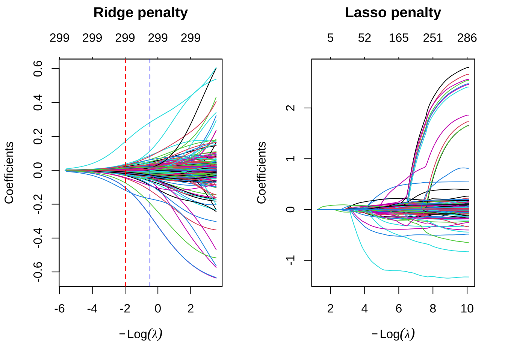
通过调整alpha参数实现弹性网
lasso <- glmnet(X, Y, alpha = 1.0)
elastic1 <- glmnet(X, Y, alpha = 0.25)
elastic2 <- glmnet(X, Y, alpha = 0.75)
ridge <- glmnet(X, Y, alpha = 0.0)
par(mfrow = c(2, 2), mar = c(6, 4, 6, 2) + 0.1)
plot(lasso, xvar = "lambda", main = "Lasso (Alpha = 1)\n\n\n")
plot(elastic1, xvar = "lambda", main = "Elastic Net (Alpha = .25)\n\n\n")
plot(elastic2, xvar = "lambda", main = "Elastic Net (Alpha = .75)\n\n\n")
plot(ridge, xvar = "lambda", main = "Ridge (Alpha = 0)\n\n\n")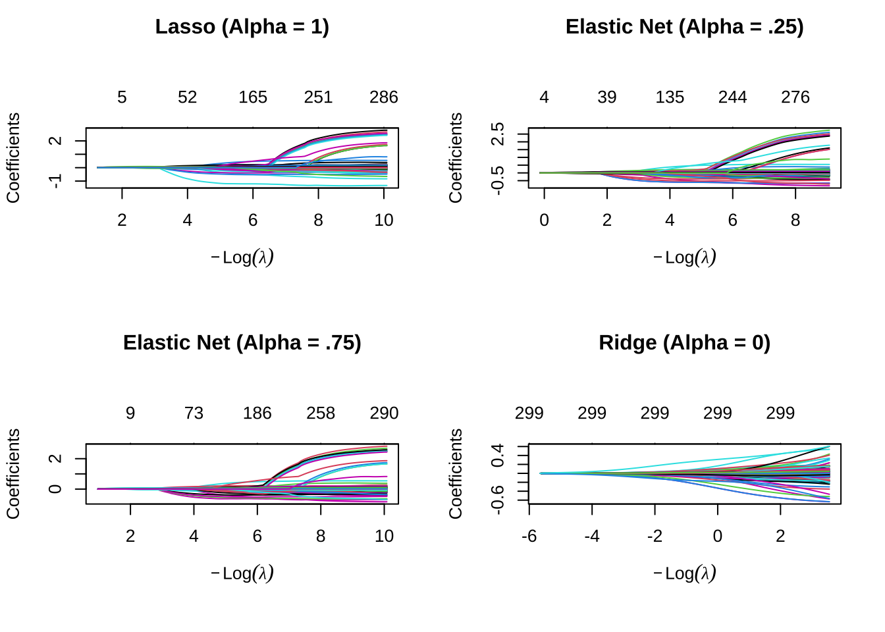
此时需要同时调整\(\lambda\)和alpha参数，可以使用caret包来自动化调参过程，以下代码在0到1之间的10个alpha值和10个lambda值上执行网格搜索。
结果显示，最小化RMSE的模型使用了alpha = 0.1和\(\lambda = 0.02\)。最小RMSE为0.1460178，对应的MSE为0.0213212。略优于之前生成的Ridge和Lasso模型。
# 为了可重现性
set.seed(123)
# 网格搜索
cv_glmnet <- train(
x = X,
y = Y,
method = "glmnet",
preProc = c("zv", "center", "scale"),
trControl = trainControl(method = "cv", number = 10),
tuneLength = 10
)
# 具有最低 RMSE 的模型
cv_glmnet$bestTune
## alpha lambda
## 7 0.1 0.02006835
## alpha lambda
## 7 0.1 0.02006835
# 最低 RMSE 模型的结果
cv_glmnet$results %>%
filter(alpha == cv_glmnet$bestTune$alpha, lambda == cv_glmnet$bestTune$lambda)
## alpha lambda RMSE Rsquared MAE RMSESD RsquaredSD
## 1 0.1 0.02006835 0.1460178 0.8749723 0.086671 0.03174582 0.04965123
## MAESD
## 1 0.007970299
## alpha lambda RMSE Rsquared MAE RMSESD RsquaredSD
## 1 0.1 0.02006835 0.1460178 0.8749723 0.086671 0.03174582 0.04965123
## MAESD
## 1 0.007970299
# 绘制交叉验证 RMSE
ggplot(cv_glmnet)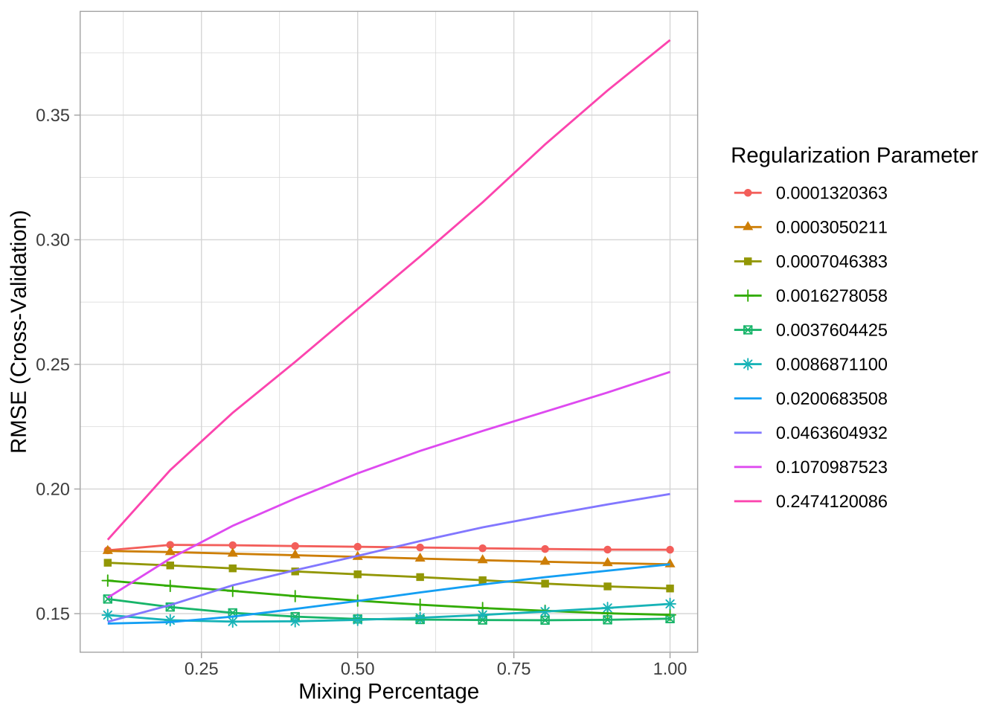
上图呈现10个alpha值（x轴）和10个lambda值（线条颜色）的10折交叉验证RMSE。
为了与之前Ames数据集的预测模型相比较，需要对响应变量（Sale_Price）进行了\(\log\)变换，变换后显示，正则化回归模型的RMSE为23281.59，优于之前获得的PLS模型的RMSE（31077.42），说明引入惩罚参数来约束系数相较于降维方法提供了较大的改进。
# 在训练数据上预测销售价格
pred <- predict(cv_glmnet, X)
# 计算变换预测的 RMSE
RMSE(exp(pred), exp(Y))
## [1] 23281.593.5 特征解释
正则化模型的变量重要性与线性（或逻辑）回归的解释类似，重要性由标准化系数的绝对值大小决定。
vip(cv_glmnet, num_features = 20, geom = "point")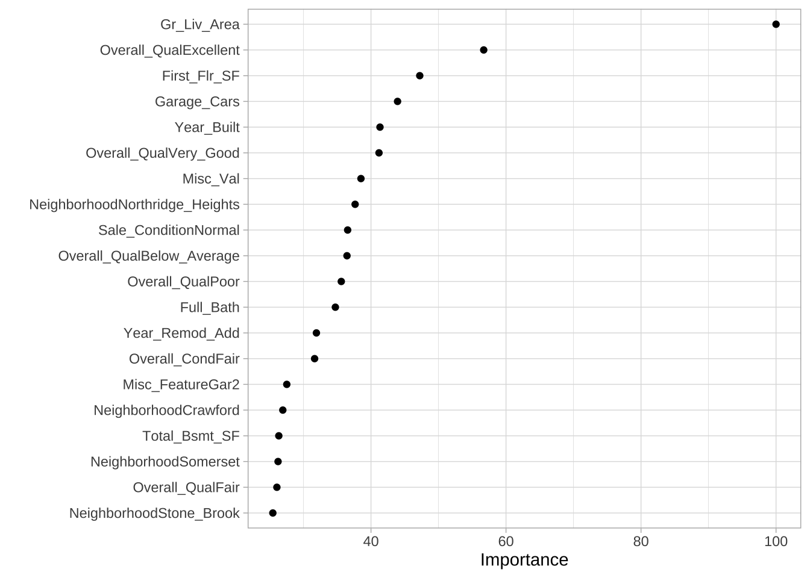
与线性回归和逻辑回归类似，特征与响应之间的关系是单调线性的。然而，由于对响应变量进行了\(\log\)变换，估计的关系在原始响应尺度上仍是单调的但非线性的。下图展示了前四个最重要变量（即绝对系数最大的变量）与未变换的销售价格之间的关系。所有关系均为正向，随着这些特征值的增加，平均预测销售价格增加。
图6.11：前四个最重要变量的部分依赖图。
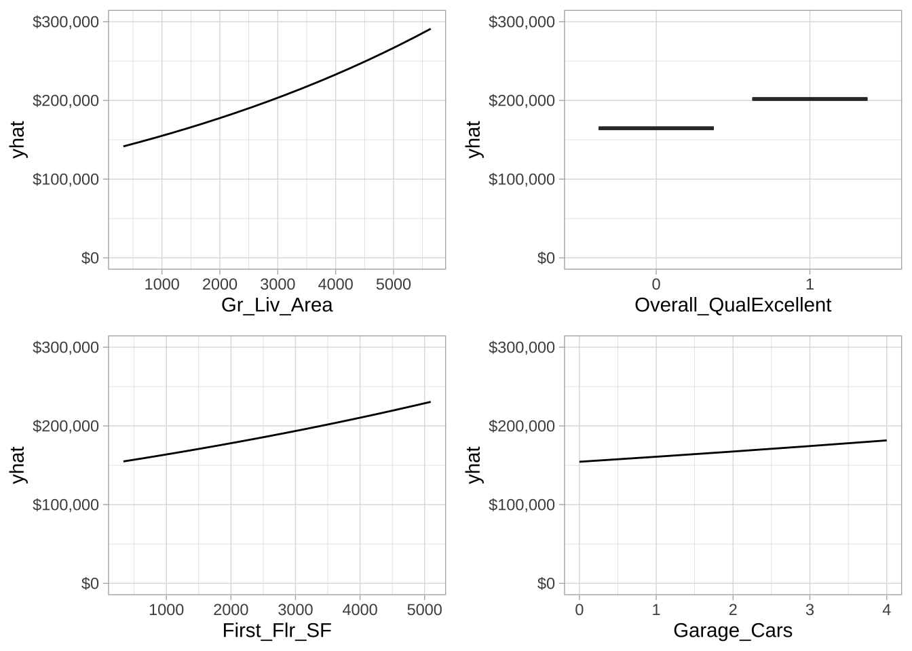
3.6 类别目标特征的预测
针对员工流失数据集，逻辑回归模型的交叉验证准确率为87.16%，正则化逻辑回归模型为87.94%，准确率提升了约0.8个百分点。
df <- attrition %>% mutate_if(is.ordered, factor, ordered = FALSE)
# 为 rsample::attrition 数据创建训练（70%）和测试（30%）集。为了可重现性使用 set.seed
set.seed(123)
churn_split <- initial_split(df, prop = .7, strata = "Attrition")
train <- training(churn_split)
test <- testing(churn_split)
# 训练逻辑回归模型
set.seed(123)
glm_mod <- train(
Attrition ~ .,
data = train,
method = "glm",
family = "binomial",
preProc = c("zv", "center", "scale"),
trControl = trainControl(method = "cv", number = 10)
)
# 训练正则化逻辑回归模型
set.seed(123)
penalized_mod <- train(
Attrition ~ .,
data = train,
method = "glmnet",
family = "binomial",
preProc = c("zv", "center", "scale"),
trControl = trainControl(method = "cv", number = 10),
tuneLength = 10
)
# 提取样本外性能指标
summary(resamples(list(
logistic_model = glm_mod,
penalized_model = penalized_mod
)))$statistics$Accuracy
## Min. 1st Qu. Median Mean 3rd Qu. Max.
## logistic_model 0.8058252 0.8529412 0.8786765 0.8715662 0.8907767 0.9320388
## penalized_model 0.8349515 0.8671757 0.8823529 0.8793902 0.8980583 0.9223301
## NA's
## logistic_model 0
## penalized_model 0当应用于具有大量特征的大型数据集时，正则化回归相较于传统GLM提供了许多显著的好处。它为处理\(n > p\)问题提供了一个很好的选择，有助于减少多重共线性的影响，并可以执行自动特征选择。它还具有相对较少的超参数，这使得它们易于调参，计算效率高且内存高效。
然而，正则化回归确实需要一些特征预处理。特别是，所有输入必须是数值型的；然而，一些包（例如caret和h2o）会自动处理此过程。它们无法自动处理缺失数据，需要在建模前移除或填补缺失值。与GLM类似，它们对特征和目标中的异常值也不够稳健。最后，正则化回归模型仍然假设单调线性关系（始终以线性方式增加或减少），是否包含特定的交互效应也取决于分析者。
4 多元自适应回归样条
线性模型可以通过手动添加非线性项（例如，平方项、交互效应和其他原始特征的变换）来适应数据的非线性模式，然而，这要求事先知道非线性关系和交互效应的具体性质。多元自适应回归样条（MARS）是一种自动创建分段线性模型的算法。
4.1 工具和数据
# 辅助包
library(dplyr) # 用于数据处理
library(ggplot2) # 用于出色的绘图
# 建模包
library(earth) # 用于拟合MARS模型
library(caret) # 用于自动化调参过程
# 模型解释包
library(vip) # 用于变量重要性
library(pdp) # 用于变量关系继续使用ames_train和ames_test数据集。
4.2 MARS的基本原理
线性模型对线性假设要求较强，如果假设不成立，会影响预测准确性。可以通过显式包含多项式项（例如，\(x_i^2\)）或阶梯函数来扩展线性模型以捕捉非线性关系。多项式回归是一种回归形式，其中\(X\)和\(Y\)之间的关系被建模为\(X\)的\(d\)次多项式。
\[ y_i = \beta_0 + \beta_1 x_i + \beta_2 x_i^2 + \beta_3 x_i^3 \dots + \beta_d x_i^d + \epsilon_i \]
另一种方法是使用阶梯函数。多项式函数施加了全局非线性关系，而阶梯函数将\(X\)的范围分成区间，并在每个区间内拟合一个简单常数（例如，平均响应值）。这相当于将连续特征转换为有序分类变量，从而将线性回归函数转换为方程：
\[ y_i = \beta_0 + \beta_1 C_1(x_i) + \beta_2 C_2(x_i) + \beta_3 C_3(x_i) \dots + \beta_d C_d(x_i) + \epsilon_i \]
其中，\(C_1(x_i)\)表示\(x_i\)值在\(c_1 \leq x_i < c_2\)范围，\(C_2(x_i)\)表示\(x_i\)值在\(c_2 \leq x_i < c_3\)范围，……，\(C_d(x_i)\)表示\(x_i\)值在\(c_{d-1} \leq x_i < c_d\)范围。
下图对比了线性、多项式和阶梯函数对非线性、非单调模拟数据的拟合。
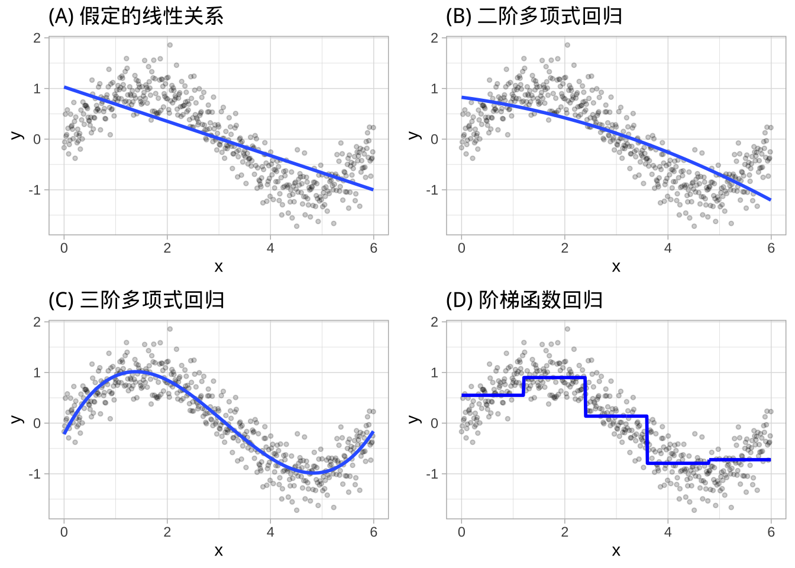
多项式回归和阶梯函数要求用户明确识别并纳入哪些变量的高阶项，在变量\(X\)的哪些点上设置阶梯函数的切割点，对于包含众多特征的大数据集而言不太现实。多元自适应回归样条（MARS）提供了一种便捷的方法，通过评估类似于阶梯函数的切割点（节点）来捕捉数据中的非线性关系。该过程将每个预测变量的每个数据点作为节点，并使用候选特征创建线性回归模型。
例如，上图中的非线性、非单调数据，其中\(Y = f(X)\)。MARS过程首先在\(X\)值的范围内寻找单个点，在此点上，\(Y\)和\(X\)之间的两个不同线性关系能够实现最小的误差（例如，最小的SSE）。结果被称为铰链函数\(h(x-a)\)，其中\(a\)是切割点值。对于单个节点，铰链函数为\(h(x-1.183606)\)，因此\(Y\)的两个线性模型为：
\[ y = \begin{cases} \beta_0 + \beta_1 (1.183606 - x) & x < 1.183606, \\ \beta_0 + \beta_2 (x - 1.183606) & x > 1.183606 \end{cases} \]
一旦找到第一个节点，搜索继续寻找第二个节点，在\(x=4.898114\)处找到，得到\(y\)的三个线性模型：
\[ y = \begin{cases} \beta_0 + \beta_1 (1.183606 - x) & x < 1.183606, \\ \beta_0 + \beta_2 (x - 1.183606) & x > 1.183606 \& x < 4.898114, \\ \beta_0 + \beta_3 (4.898114 - x) & x > 4.898114 \end{cases} \]
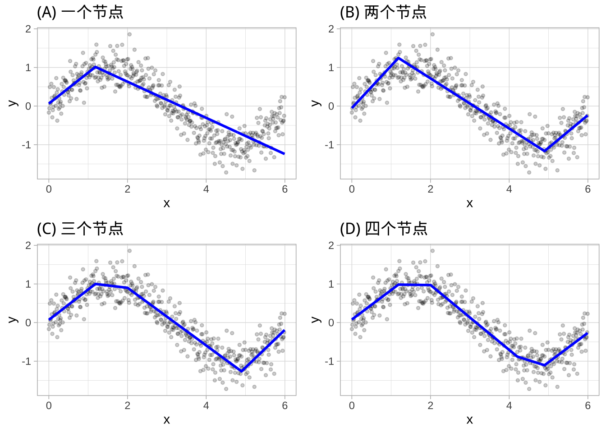
这一过程持续进行，直到找到许多节点，生成一个（可能）高度非线性的预测方程。尽管包含许多节点可能使我们在训练数据上拟合出非常好的关系，但它可能无法很好地泛化到新的、未见过的数据。因此，一旦识别出完整的节点集，我们可以依次移除对预测准确性贡献不大的节点。这个过程称为“修剪”，可以使用与之前模型相同的交叉验证来找到最佳的节点数量。
4.3 拟合基本MARS模型
可以使用earth包（Enhanced Adaptive Regression Through Hinges）拟合直接引擎的MARS模型。默认情况下，earth::earth()会评估所有提供的特征上的所有潜在节点，然后根据训练数据的\(R^2\)预期变化小于0.001进行修剪。这一计算通过广义交叉验证（GCV）过程执行，这是一种线性模型的计算快捷方式，生成近似的留一法交叉验证误差指标。
以下代码对Ames示例构建基本的MARS模型。结果显示了最终模型的GCV统计量、广义\(R^2\)（GRSq）等信息。
# 拟合基本MARS模型
mars1 <- earth(
Sale_Price ~ .,
data = ames_train
)
# 打印模型摘要
print(mars1)
## Selected 41 of 45 terms, and 29 of 308 predictors
## Termination condition: RSq changed by less than 0.001 at 45 terms
## Importance: Gr_Liv_Area, Year_Built, Total_Bsmt_SF, ...
## Number of terms at each degree of interaction: 1 40 (additive model)
## GCV 511589986 RSS 967008439675 GRSq 0.9207836 RSq 0.9268516结果显示模型从308个原始预测变量（包括了因子生成的哑变量）自动选择29个预测变量，通过节点分割和可能的交互效应从预测变量生成了45个初始阶段基函数项（包括截距项和铰链函数），最后通过修剪保留了41个基函数项。结果还描述了最终模型中每个交互阶数的基函数（项）的数量，1代表1个截距，40代表其他的基函数项都是1阶的，没有交互项。
查看模型的前10个基函数项，可以看到Gr_Liv_Area在3197处有一个节点（\(h(3197-Gr_Liv_Area)\)的系数为-287.99），Year_Built在2002处有一个节点，等等。
summary(mars1) %>% .$coefficients %>% head(10)
## Sale_Price
## (Intercept) 227597.23167
## h(Gr_Liv_Area-3194) -287.99337
## h(3194-Gr_Liv_Area) -58.61227
## h(Year_Built-2002) 3128.13737
## h(2002-Year_Built) -450.63697
## h(Total_Bsmt_SF-2223) -653.13097
## h(2223-Total_Bsmt_SF) -29.03002
## h(1656-Bsmt_Unf_SF) 21.52273
## Overall_QualVery_Excellent 119876.97697
## Overall_QualExcellent 73257.41159可以通过绘图方法（plot）对MARS模型性能进行呈现。图中展示了模型选择图，绘制了模型中的基函数项数（x轴）的GCV \(R^2\)（左侧y轴和黑色实线）的关系，以及基函数项数与原始预测变量数（右侧y轴和黑色虚线）的关系，垂直虚线则指示最佳基函数项数，在此点上GCV \(R^2\)的边际增量小于0.001。
plot(mars1, which = 1)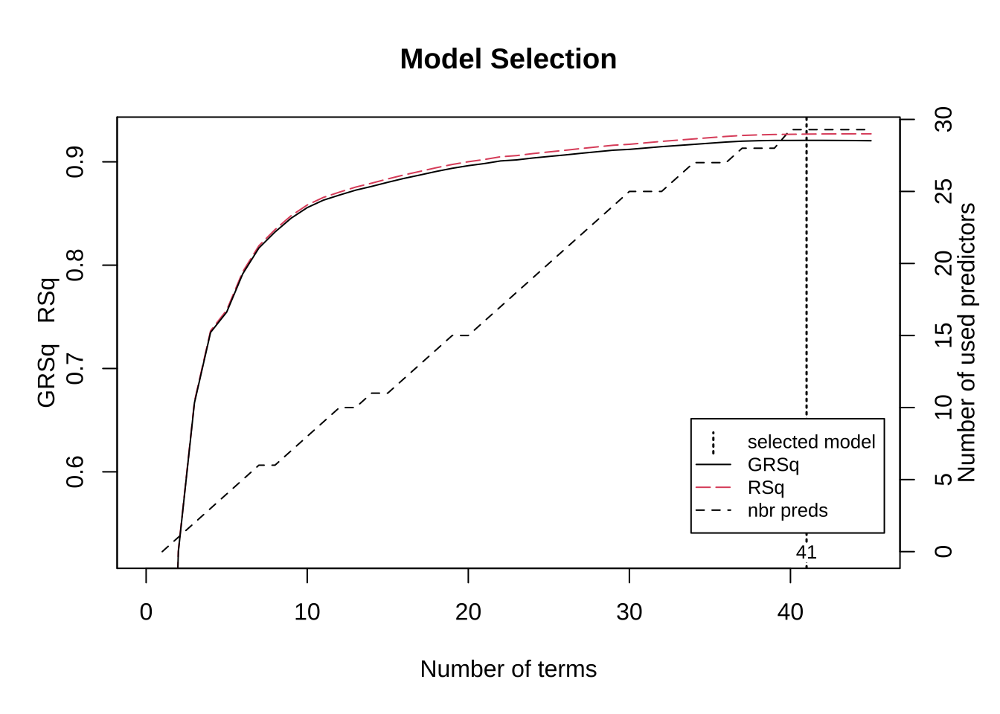
除了修剪节点数量外，earth::earth()还能评估不同铰链函数之间的潜在交互效应（增加degree = 2参数）。结果显示模型包括二阶交互项，即两个铰链函数之间的交互项（例如，h(2002-Year_Built)*h(Gr_Liv_Area-2398)表示建于2002年之后且地面居住面积超过2398平方英尺的房屋的交互效应）。
# 拟合基本MARS模型
mars2 <- earth(
Sale_Price ~ .,
data = ames_train,
degree = 2
)
# 查看前10个系数项
summary(mars2) %>% .$coefficients %>% head(10)
## Sale_Price
## (Intercept) 3.473694e+05
## h(Gr_Liv_Area-3194) 2.302940e+02
## h(3194-Gr_Liv_Area) -7.005261e+01
## h(Year_Built-2002) 5.242461e+03
## h(2002-Year_Built) -7.360079e+02
## h(Total_Bsmt_SF-2223) 1.181093e+02
## h(2223-Total_Bsmt_SF) -4.901140e+01
## h(Year_Built-2002)*h(Gr_Liv_Area-2398) 9.035037e+00
## h(Year_Built-2002)*h(2398-Gr_Liv_Area) -3.382639e+00
## h(Bsmt_Unf_SF-625)*h(3194-Gr_Liv_Area) -1.145129e-024.4 调参
MARS模型有两个重要的调参参数：最大交互程度和最终模型中保留的项数。需要执行网格搜索以确定这两个超参数的最佳组合，以最小化预测误差（之前earth函数的修剪过程仅基于训练数据的近似CV模型性能（计算效率很高的GCV），而不是精确的k折CV过程）。
# 创建调参网格，阶数最大为3，修剪节点2到100中的10个点
hyper_grid <- expand.grid(
degree = 1:3,
nprune = seq(2, 100, length.out = 10) %>% floor()
)
head(hyper_grid)
## degree nprune
## 1 1 2
## 2 2 2
## 3 3 2
## 4 1 12
## 5 2 12
## 6 3 12使用caret执行10折CV的网格搜索。结果显示最佳组合的模型包括二阶交互效应，并保留56个项，最佳模型的交叉验证RMSE为23363.42美元。
# 交叉验证模型
set.seed(123) # 为了可重现性
cv_mars <- train(
x = subset(ames_train, select = -Sale_Price),
y = ames_train$Sale_Price,
method = "earth",
metric = "RMSE",
trControl = trainControl(method = "cv", number = 10),
tuneGrid = hyper_grid
)
# 查看结果
cv_mars$bestTune
## nprune degree
## 16 56 2
cv_mars$results %>%
filter(nprune == cv_mars$bestTune$nprune, degree == cv_mars$bestTune$degree)
## degree nprune RMSE Rsquared MAE RMSESD RsquaredSD MAESD
## 1 2 56 23363.42 0.9161586 15755.06 1861.729 0.01315104 789.6814
ggplot(cv_mars)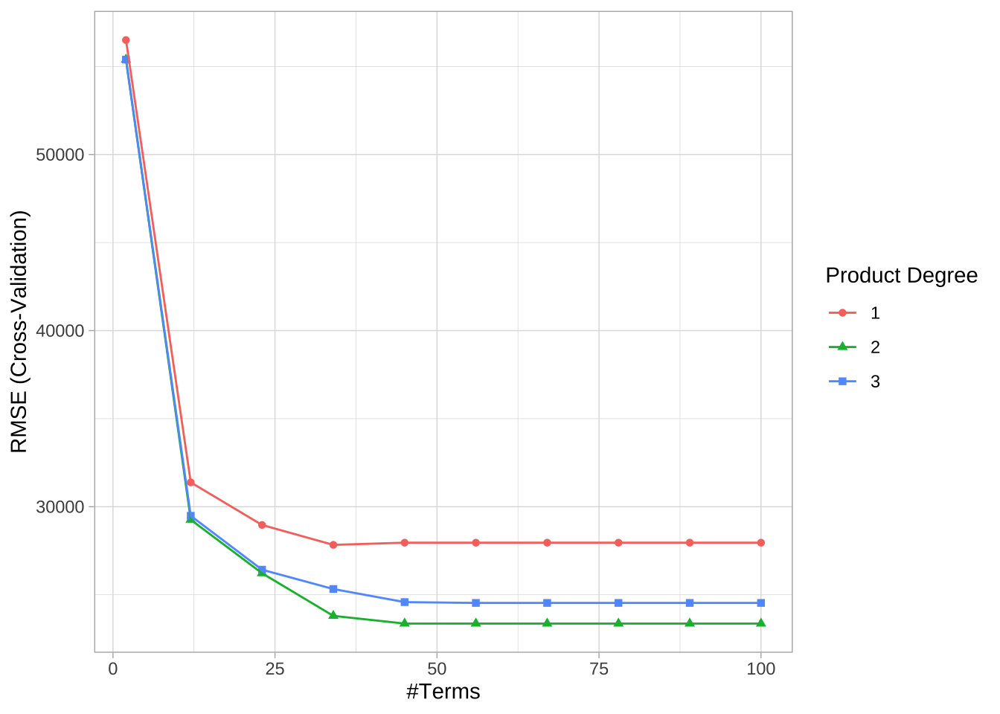
可以在上述网格搜索的基础上进一步优化模型调参，例如在56附近比较保留45-65个项。
4.5 特征解释
通过earth::earth()拟合的MARS模型包括一个向后剔除特征的选择程序（修剪），该程序检查添加每个预测变量时GCV误差估计的减少量，将其作为变量重要性度量。另一种重要性度量是添加项时残差平方和（RSS）的变化。这两种方法之间的差异很小。
# 变量重要性图
p1 <- vip(cv_mars, num_features = 40, geom = "point", value = "gcv") + ggtitle("GCV")
p2 <- vip(cv_mars, num_features = 40, geom = "point", value = "rss") + ggtitle("RSS")
gridExtra::grid.arrange(p1, p2, ncol = 2)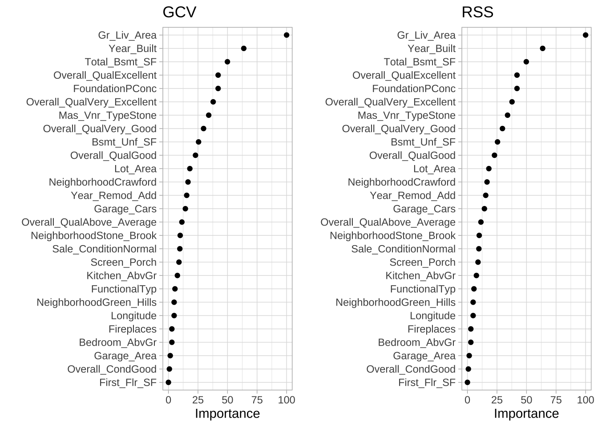
变量重要性仅测量特征纳入模型时对预测误差的影响，并不测量特征所创建的铰链函数的影响。为了更好地理解这些特征与Sale_Price之间的关系，可以为每个特征单独创建部分依赖图（PDPs），也可以创建两个特征的联合依赖图。
下面单独PDPs表明模型发现每个特征中的一个节点提供了最佳拟合。例如，对于面积超过节点的房屋，销售价格的边际增量高于面积未超过节点的房屋。类似地，对于2002年之后建造的房屋，房屋年龄对销售价格的边际效应大于2002年之前建造的房屋。交互图（最右侧图）展示了这两个特征组合时的更强效应。
# 构建部分依赖图
p1 <- partial(cv_mars, pred.var = "Gr_Liv_Area", grid.resolution = 10) %>%
autoplot()
p2 <- partial(cv_mars, pred.var = "Year_Built", grid.resolution = 10) %>%
autoplot()
p3 <- partial(cv_mars, pred.var = c("Gr_Liv_Area", "Year_Built"),
grid.resolution = 10) %>%
plotPartial(levelplot = FALSE, zlab = "yhat", drape = TRUE, colorkey = TRUE,
screen = list(z = -20, x = -60))
# 并排显示图
gridExtra::grid.arrange(p1, p2, p3, ncol = 3)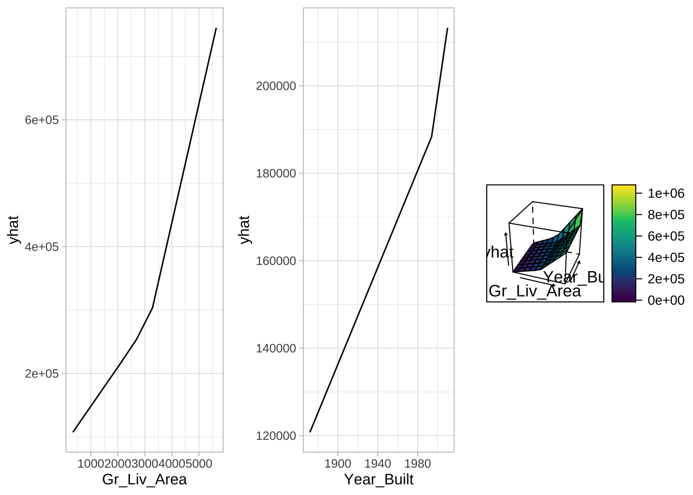
4.6 类别目标特征的预测
MARS方法和算法可以扩展到处理分类问题和广义线性模型（GLM）。以员工流失数据为例。
# 获取流失数据
df <- attrition %>% mutate_if(is.ordered, factor, ordered = FALSE)
# 为 attrition 数据创建训练（70%）和测试（30%）集。
# 使用 set.seed 确保可重现性
set.seed(123)
churn_split <- rsample::initial_split(df, prop = .7, strata = "Attrition")
churn_train <- rsample::training(churn_split)
churn_test <- rsample::testing(churn_split)
# 为了可重现性
set.seed(123)
# 交叉验证模型
tuned_mars <- train(
x = subset(churn_train, select = -Attrition),
y = churn_train$Attrition,
method = "earth",
trControl = trainControl(method = "cv", number = 10),
tuneGrid = hyper_grid
)
# 最佳模型
tuned_mars$bestTune
## nprune degree
## 3 23 1
# 绘制结果
ggplot(tuned_mars)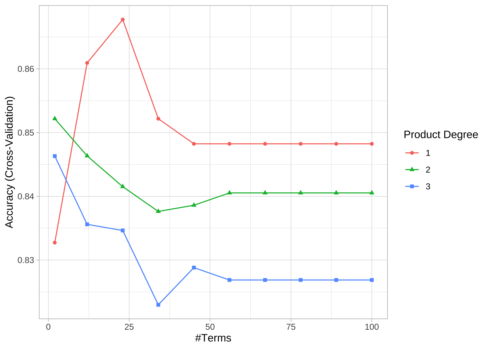
网格搜索中30种不同超参数组合的交叉验证准确率。最佳模型保留23个项，不包含交互效应。但是，MARS模型与之前的线性模型（逻辑回归和正则化回归）相比，没有看到整体准确率的改善。
| Min. | 1st Qu. | Median | Mean | 3rd Qu. | Max. | NA's | |
|---|---|---|---|---|---|---|---|
| Logistic_model | 0.8058252 | 0.8529412 | 0.8786765 | 0.8715662 | 0.8907767 | 0.9320388 | 0 |
| Elastic_net | 0.8349515 | 0.8671757 | 0.8823529 | 0.8793902 | 0.8980583 | 0.9223301 | 0 |
| MARS_model | 0.8431373 | 0.8467304 | 0.8550691 | 0.8677300 | 0.8810680 | 0.9215686 | 0 |
MARS有几个优点。首先，MARS自然处理混合类型的预测变量（定量和定类）。MARS将定类预测变量的类别分成两组，考虑所有可能的二元划分。每组随后生成一对分段指示函数。MARS对特征工程（变量变换）的要求最低（例如，特征缩放）并会自动执行特征选择。由于MARS扫描每个预测变量以识别改善预测准确性的分割点，因此不会选择无信息的特征。此外，高度相关的预测变量对预测准确性的影响不像在OLS模型中那样大。
然而，MARS模型的一个缺点是训练速度通常较慢。由于算法扫描每个预测变量的每个值以寻找潜在的切割点，随着样本数\(n\)和特征数\(p\)的增加，计算性能可能会下降。此外，尽管相关预测变量不一定妨碍模型性能，但它们可能使模型解释变得困难。当两个特征几乎完全相关时，算法通常会选择它在扫描特征时遇到的第一个特征。然后，由于它随机选择了前一个，后一个相关特征可能不会被包含，因为它没有额外的解释能力。
参考书籍
- Bradley Boehmke & Brandon Greenwell，Hands-On Machine Learning with R，CRC Press, 2020.
- Pang-Ning Tan 数据挖掘导论（第2版），机械工业出版社，2019.
- Ian Foster等 Big Data and Social Science: Data Science Methods and Tools for Research and Practice, CRC Press, 2021.